original pdf / make corrections
Alan C. Kay
Apple Computer
kay2@apple.com.Internet#
Permission to copy without fee all or part of this material is granted
provided that the copies are not made or distributed for direct commercial
advantage, the ACM copyright notice and the title of the publication and
its date appear, and notice is given that copying is by permission of the
Association for Computing Machinery. To copy otherwise, or to republish,
requires a fee and/or specific permission.
HOPL-II/4/93/MA, USA © 1993 ACM 0-89791-571-2/93/0004/0069...$1.50
Більшість ідей походять із попередніх ідей. Шістдесяті роки, зокрема в ARPA спільноти, породила безліч уявлень про «людинно-комп’ютерний симбіоз» через інтерактивні комп’ютери з розділеним часом, графічні екрани та вказівки пристроїв. Розширені комп’ютерні мови були винайдені для моделювання складних систем такі як нафтопереробні заводи та напіврозумна поведінка. Зміна парадигми сучасних персональних комп’ютерів у найближчому часу , перекриття віконних інтерфейсів та об'єктно-орієнтованого дизайну виникла із сприйняття роботи шістдесятих як чогось більше, ніж "покращена стара річ". Тобто це більш ніж кращий спосіб: робити мейнфрейм обчислювання; для кінцевих користувачів, щоб підняти функціональність; зробити структури даних біль абстрактними анотація. Замість цього обіцяне експоненціальне зростання обчислень/$/об'єм вимагав, щоб шістдесятні речі розглядалися як "майже нова річ" і з'ясувати якими можуть бути фактичні «нові речі». Наприклад, обчислення за допомогою портативного "Dynabook" у такий спосіб, який був би неможливий на спільному мейнфреймі; мільйони потенційних користувачів означають, що інтерфейс користувача повинен буде стати навчальним середовищем за моделями Монтессорі та Брунера; і потреби у великому масштабі, зменшенні складності та грамотності кінцевого користувача вимагають відмови від структур даних і контролю на користь більшої біологічної схеми захищених універсальних клітин, які взаємодіють лише через повідомлення і які можуть імітувати будь-яку бажану поведінку.
Ранній Smalltalk був першою повною реалізацією цих нових точок зору як і його багато попередників у апаратному забезпеченні, мові та інтерфейсі користувача дизайн. Він став взірцем нових комп’ютерів, частково тому, що такими були ми фактично намагаюлись якісно змінити структури переконань—нова парадигма Куна у тому ж дусі, що й винайдення друкарського верстата—і таким чином взяли дуже екстремальні позиції, які майже змусили винайти ці нові стилі.
—Дену Інгаллу, Адель Голдберг та решті банди Xerox PARC LRG
—Дейву Евенсу, Бобу Бартону, Марвіну Мінскі та Сеймуру Пеперту
—До SKETCHPAD, JOSS, LISP і SIMULA - 4 чудових концепцій програмування шістдесятих
Я пишу цей вступ у літаку на висоті 35 000 футів. На моїх колінах п’яти фунтовий ноутбук —1992 "Interim Dynabook"—наприкінці року його продавали менше ніж за 700 доларів. Він має плоский, чіткий растровий екран із високою роздільною здатністю, вікна, що перекриваються, піктограми, вказівний пристрій, значний обсяг пам’яті та обчислювальна потужність, а його найкраще програмне забезпечення є об’єктно-орієнтованим. Він має розширені вбудоване сітьове обладнання та вже є варіанти для бездротової мережі. Smalltalk працює на цій системі та є однією з основних систем, які я використовую для своєї поточної роботи із дітьми. Певним чином це більше, ніж Dynabook (кількісно), а деякими ні зовсім там ще (якісно). Загалом, майже те, що було в уяві наприкінці шістдесятих.
Smalltalk був частиною цієї великої гонитви за ARPA, а пізніше Xerox PARC, яку я назвав персональною обчислювальною технікою. На кожному етапі було залучено так багато людей із дослідницьких спільнот що точний розподіл кредитів для ідей надзвичайно складний. Натомість, як Боб Бартон любив цитувати Гете, ми повинні «розділяти хвилювання відкриття без марних спроб вимагання пріоритету».
Я спробую показати, звідки прийшла більшість впливів і як вони трансформувалися у магнітному полі, утвореному новою метафорою персонального комп’ютера. Це було ставлення а також чудові ідеї піонерів, які допомогли винайти Smalltalk. Багато людей І якими найбільше захоплювалися в той час, як-от Іван Сазерленд, Марвін Мінскі, Сеймур Пейперт, Гордон Мур, Боб Бартон, Дейв Еванс, Батлер Лемпсон, Джером Брунер та інші—схоже, мали чудове відчуття, що їхні творіння, хоч і чудові за відносними стандартами, не були близькими абсолютні пороги, які потрібно було подолати. Маленькі уми намагаються створити релігії, а великі просто хочу кращих маршрутів на гору. Де Ньютон сказав, що бачив далі, стоячи на плечах гігантів, інформатики занадто часто стоять навшпиньки один одному. Короткозорість є все ще проблема, коли є плечі гігантів, щоб стояти на плечі —"переглядіти" краще, ніж мати натхнення—але його можна звести до мінімуму, використовуючи окуляри, лінзи яких дуже чутливі до естетики та критика.
Мови програмування можна класифікувати кількома способами: імперативний, аплікативний, засновані на логіці, проблемно-орієнтовані тощо. Але всі вони, здається, є або "аглютинацією функцій", або «кристалізація стилю». COBOL, PL/1, Ada тощо належать до першого роду; LISP, APL— і Smalltalk—це другий вид. Ймовірно, не випадково аглютинативні мови всі, здається, були спровоковані комітетами, а кристалізаційні мови – однією особою.
Дизайн Smalltalk—і його існування—завдячують розумінню того, що все, що ми можемо описати, може бути представлений рекурсивною композицією єдиного виду поведінкового будівельного блоку, який приховує свою комбінацію стану та обробки всередині себе, і з ним можна мати справу лише через обмін повідомленнями. З філософської точки зору об’єкти Smalltalk мають багато спільного з монадами Лейбніца та поняттями фізики та біології 20 століття. Його спосіб створення об'єктів досить платонічний у тому що деякі з них діють як ідеалізація концепціі—Ідеї—з яких можуть бути створені прояви. що Ідеї самі по собі є проявами (Ідеї-Ідеї), і що Ідея-Ідея є своєрідним Ідея-Прояву—яка є різновидом самої себе, так що система повністю самоописується— це було б оцінено Платоном як надзвичайно практичний жарт [Plato].
У компі'ютерних термінах, Smalltalk — це рекурсія самого поняття комп’ютера. Замість поділу «комп’ютерних штучок» на речі, кожна з яких менш сильна, ніж ціле, як-от структури даних, процедури та функції, які є звичайними атрибутами мов програмування—кожен об’єкт Smalltalk є рекурсія на всі можливості комп'ютера. Таким чином, його семантика трохи нагадує наявність тисяч і тисячі комп’ютерів, об’єднаних між собою дуже швидкою мережею. Питання конкретної репрезентації таким чином можна відкласти майже на невизначений термін, тому що ми в основному стурбовані тим, щоб комп’ютери поводилися належним чином і зацікавлені в конкретних стратегіях лише в тому випадку, якщо результати невірні або повертаються занадто повільно.
Незважаючи на те, що Smalltalk справді має благородних предків, внесок Smalltalk це нова парадигма дизайну, яку я назвав об'єктно-орієнтованою— для вирішення великих проблем професійного програміста та створення невеликіх, доступними для користувача-початківця. Об'єктно-орієнтоване проектування є успішною спробою якісно підвищити ефективність моделювання все більш складних динамічних систем і взаємодій із користувачами які стали можливими завдяки всплеску сілікону.
«Ми будемо знати, що вони думають
коли вони це зроблять."
—Річард Хеммінг
«Пам'ять і уява — це лише два
слова для того самого."
—Томас Гоббс
У цій історії я намагатимусь бути вірним проханню Геммінга, поміркованому спостереженнями Гоббса. Я мав труднощі під час попередніх спроб написати про Smalltalk, тому що моя емоційна участь завжди була зосереджена на персональному комп’ютері як підсилювачі людської досяжності, а не на проектуванні системи програмування, і ми ще не дійшли до цього. Незважаючи на те, що я був ініціатором і оригінальним дизайнером Smalltalk, він завжди належав більше людям, які змушували його працювати та виводили його з дверей, особливо Дену Інгаллу та Адель Голдберг. Кожен із LRGers зробив глибокий і чудовий внесок у проект, і я хотів би, щоб було достатньо місця, щоб віддати їм належне. Але я думаю, що всі ми погодимося, що протягом більшої частини розвитку Smalltalk Ден був центральною фігурою. Програмування, по суті, є практичним мистецтвом, у якому будуються реальні речі, і тому має існувати реальна реалізація. Насправді багато, якщо не більшість, мов сьогодні використовуються не тому, що вони мають якісь реальні переваги, а через те, що вони існують на одній чи кількох машинах, їх здатність завантажуватись тощо. Але Ден був набагато більше, ніж чудовим реалізатором, він також став все більше й більше дизайнера, не лише мови, але й інтерфейсу користувача, оскільки Smalltalk переміщувався в практичний світ.
Тут я спробую зосередитися на подіях, що привели до Smalltalk-72 і його переходу до сучасної форми Smalltalk-76. Більшість ідей виникли тут, і багато з найраніших етапів ООП погано задокументовані в посиланнях, які майже неможливо знайти.
Ця історія надто довга, але я був вражений тим, скільки людей і систем, які мали вплив, виглядають лише тінню або взагалі не виглядають. Мені шкода, що я не можу сказати більше про Боба Балзера, Боба Бартона, Денні Боброу, Стіва Карра, Веса Кларка, Барбару Дойч, Пітера Дойча, Білла Дювалла, Боба Флегала, Лору Гулд, Брюса Горна, Батлера Лемпсона, Дейва Лідла, Вільям Ньюман, Білл Пекстон, Трюгве Рінскауг, Дейв Робсон, Дуг Росс, Пол Ровнер, Боб Спраул, Ден Свінехарт, Берт Сазерленд, Боб Тейлор, Уоррен Тейтельман, Бонні Тенненбаум, Чак Такер і Джон Ворнок. Гірше того, я пропустив згадку про багато систем, чий дизайн я ненавидів, але це породило чимало корисних ідей і ставлень у відповідь. Іншими словами, в «історії» не слід вірити всерйоз, а розглядати їх як «НЕВІЛЬНІ ЖЕСТИ», зроблені задовго після того, як актори покинули сцену.
Дякуємо численним рецензентам за те, що витримали численні чернетки, які вони мали коментувати. Особлива подяка Майку Махоні за таку м’яку допомогу, що я прислухався до його порад, і так добре, що вони значно покращили це есе—а також Жану Саммету, старому старому другу, який буквально налякав мене, щоб я закінчив його—я не хотів дізнаватися що було б, якби я запізнився. Шеррі Маклафлін і Кім Роуз дуже допомогли зібрати всі матеріали разом.
Хоча ООП виникало з багатьох мотивацій, головними були два. Для великого масштабу потрібно було знайти кращу модульну схему для складних систем, що передбачають приховування деталей, а для малого — знайти більш гнучкий варіант присвоєння, а потім спробувати його взагалі виключити. Як і у випадку з більшістю нових ідей, спочатку це відбувалося поодинокими приступами.
Нові ідеї проходять етапи прийняття як зсередини, так і ззовні. Зсередини послідовність рухається від «ледве бачачого» шаблону кілька разів, потім помічаючи його, але не сприймаючи його «космічного» значення, потім застосовуючи його оперативно в кількох сферах, потім настає «велике обертання», в якому шаблон стає центром нового способу мислення, і, зрештою, воно перетворюється на ту саму непохитну релігію, від якої спочатку відкололося. Зовні, як зауважив Шопенгауер, нова ідея спочатку засуджується як витвір божевільних, через кілька років вона вважається очевидною та буденною, і, нарешті, оригінальні викривачі стверджують, що вони її винайшли.
Дотримуючись етапів, я "ледве бачив" ідею кілька разів приблизно. 1961 рік – програміст у ВПС. 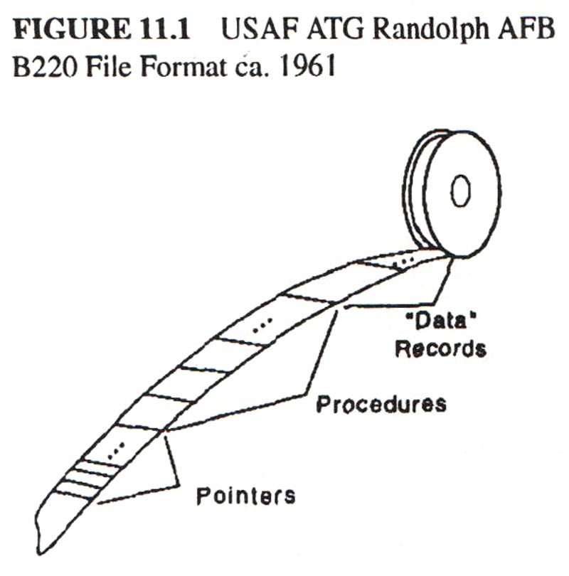 Перший був на Burroughs 220 у формі стилю для транспортування файлів з однієї установки Air Training Command до іншої. Тоді ще не існувало стандартних операційних систем чи форматів файлів, тож якийсь (на сьогодні невідомий) дизайнер вирішив усунути проблему, взявши кожен файл і розділивши його на три частини. Третя частина складалася з фактичних записів даних довільного розміру та формату. Друга частина містила процедури B220, які знали, як отримати записи та поля для копіювання та оновлення третьої частини. І перша частина була масивом відносних покажчиків на точки входу процедур у другій частині (початкові покажчики були в стандартному порядку, що представляло стандартні значення). Зайве говорити, що це була чудова ідея, і її використовували в багатьох наступних системах, поки примусове використання COBOL не вигнало її з існування.
Друга ідея з’явилася трохи пізніше, коли ATC вирішив замінити 220 на B5000. У мене не було перспективи по-справжньому оцінити це в той час, але я звернув увагу на його сегментовану систему зберігання, ефективність компіляції HLL і байт-кодування виконання, його автоматичні механізми для виклику підпрограм і перемикання між процесами, його чистий код для спільного використання, його механізми захисту тощо. І я побачив, що доступ до його довідкової таблиці програм відповідає схемі 220 файлової системи надання процедурного інтерфейсу модулю. Однак моїм великим ударом від цієї машини на той час була не ідея ООП, а деякі ідеї щодо перекладу та оцінки HLL. [Barton, 1961] [Burroughs, 1961]
Після військово-повітряних сил я проклав собі шлях до решти коледжу, програмуючи здебільшого пошукові системи для великих колекцій даних про погоду для Національного центру атмосферних досліджень. 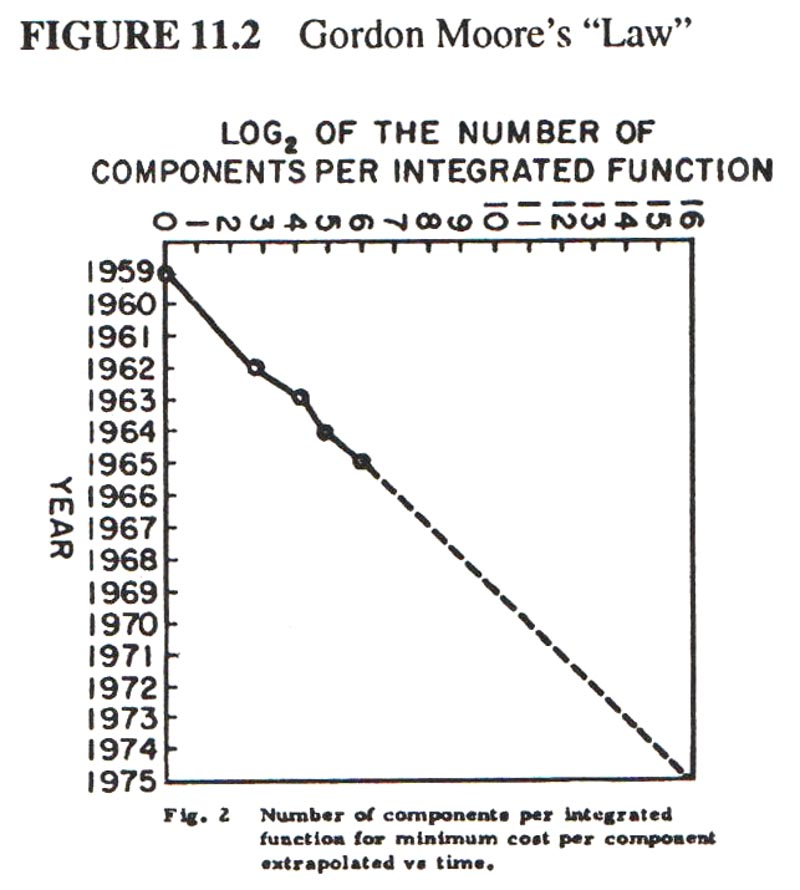 Я зацікавився симуляцією загалом, зокрема однієї машини іншою, але окрім виконання одновимірної версії передачі блоку бітового поля (bitblt) на CDC 6600 для імітації розмірів слів різних машин, більшість моєї уваги відволікався на школу, або, краще сказати, на театр у школі. Перебуваючи в Чіппева-Фолс, допомагаючи налагодити 6600, я прочитав статтю Гордона Мура, який передбачив, що інтегрований кремній на чіпах буде експоненціально покращувати щільність і вартість протягом багатьох років [Moore 65]. У той час у 1965 році, коли я стояв біля 10 MIP 6600 з фреоновим охолодженням розміром із кімнату, його приголомшливі прогнози не мали жодного значення для мене.
Завдяки низці випадковостей я опинився в аспірантурі Університету Юти восени 1966 року, «нічого не знаючи». Тобто я ніколи не чув про ARPA чи її проекти, або про те, що головною метою Юти в цій спільноті було вирішення проблеми «прихованої лінії» у 3D-графіці, поки я не зайшов до офісу Дейва Еванса, шукаючи роботу та письмовий стіл. На столі Дейва лежав стос документів у коричневих обкладинках, один із яких він простягнув мені: «Візьми це й прочитай».
Кожен новачок отримав один. Назва: «Sketchpad: графічна комунікаційна система людина-машина» [Sutherland, 1963]. Те, що він міг зробити, було надзвичайно дивним і абсолютно чужим будь-якому використанню комп’ютера, з яким я коли-небудь стикався. Три великі ідеї, з якими було найлегше впоратися, це: винахід сучасної інтерактивної комп’ютерної графіки; речі описувалися шляхом створення «майстер-креслення», яке могло створювати «креслення зразків»; контроль і динаміка були забезпечені «обмеженнями», також у графічній формі, які можна було застосувати до майстрів для формування взаємопов’язаних частин. Його структури даних було важко зрозуміти – єдиною нечітко знайомою конструкцією було вбудовування покажчиків на процедури та використання процесу, що називається зворотним індексуванням, щоб переходити через них до процедур, як-от файлова система 220 [Ross, 1961]. Він був першим, у якому були вікна з вирізанням і масштабуванням, намальованими на віртуальному аркуші площею близько 1/3 квадратної милі!
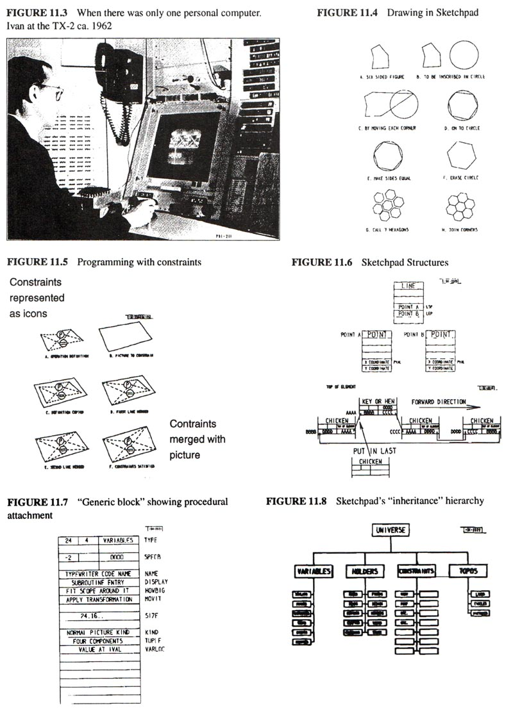Голова крутиться, я знайшов свій стіл. На ньому була купа стрічок і списків, а також записка: «Це Алгол для 1108. Він не працює. Будь ласка, зробіть так, щоб він працював». Останній аспірант отримує останнє брудне завдання.
Документація була незрозумілою. Імовірно, це був Case-Western Reserve 1107 Algol, але його було перероблено для створення мови під назвою Simula; документація читалася як норвезька транслітерація англійською мовою, що насправді так і було. Було вживання таких слів, як activity і process, які, здавалося, не збігалися зі звичайним вживанням англійською мовою.
Нарешті ми з іншим аспірантом розгорнули програму зі списком на 80 футів у коридорі та поповзли по ній, кричачи один одному про відкриття. Найдивнішою частиною був розподільник пам’яті, який не підкорявся дисципліні стека, як це було зазвичай для Algol. Через кілька днів це дало ключ до розгадки. Simula виділяла структури, дуже схожі на екземпляри Sketchpad. Були описи, які діяли як майстри, і вони могли створювати екземпляри, кожен з яких був незалежною сутністю. Те, що Sketchpad називав майстрами та екземплярами, Simula називав діяльністю та процесами. Більше того, Simula була процедурною мовою для керування об’єктами, подібними до Sketchpad, маючи, таким чином, значно більшу гнучкість, ніж обмеження (хоча за певну ціну елегантності) [Nygaard, 1966, Nygaard, 1983].
Це був великий хіт, і з тих пір я не був колишнім. Я вважаю, що хіт мав такий вплив через те, що я бачив цю ідею достатньо разів у достатньо різних формах, щоб остаточне визнання було таким загальним, щоб мати якість прозріння. Моя основна математика була зосереджена на абстрактних алгебрах, декілька операцій, які зазвичай застосовувалися до багатьох структур. Моя спеціальність з біології була зосереджена як на клітинному метаболізмі, так і на більш масштабному морфогенезі з його уявленнями про прості механізми, що контролюють складні процеси, і один вид будівельного блоку, здатного диференціюватися на всі необхідні будівельні блоки. Файлова система 220, B5000, Sketchpad і, нарешті, Simula, всі використовували ту саму ідею для різних цілей. Боб Бартон, головний розробник B5000 і професор в Юті, сказав в одному зі своїх виступів кількома днями раніше: «Основний принцип рекурсивного дизайну полягає в тому, щоб зробити частини такими ж потужними, як і ціле». Уперше я подумав про ціле як про весь комп’ютер і задумався, чому хтось хоче розділити його на слабші речі, які називаються структурами даних і процедурами. Чому б не розділити його на маленькі комп’ютери, як це починалося з розподілом часу? Але не десятками. Чому б не тисячі з них, кожна з яких імітує корисну структуру?
Я згадав монади Лейбніца, дискурс Платона про «розділення природи на її суглобах» та інші спроби розібрати складність. Звичайно, філософія — це думка, а інженерія — це дії, а наука є щасливим середовищем десь посередині. Не буде перебільшенням сказати, що більшість моїх ідей з того часу взяли коріння з Simula, але не як спроба її вдосконалити. Це була обіцянка абсолютно нового способу структурування обчислень, яка захопила мене. Як виявилося, знадобиться чимало років, щоб зрозуміти, як використовувати цю інформацію та розробити ефективні механізми для її реалізації.
Дейв Еванс не дуже вірив у аспірантуру як навчальний заклад. Як і у випадку з багатьма «підрядниками» ARPA, він хотів, щоб його студенти робили «справжні речі»; вони повинні пройти аспірантуру якомога швидше; і їхні тези повинні просувати сучасний рівень. Дейв часто отримував роботу консультанта для своїх студентів, і на початку 1967 року він познайомив мене з Едом Чідлом, доброзичливим апаратним генієм у місцевій аерокосмічній компанії, який працював над «маленькою машиною». Це був не перший персональний комп’ютер – це був LINC Веса Кларка, – але Ед хотів, щоб він був для професіоналів, які не користуються комп’ютерами, зокрема, він хотів програмувати його на мові вищого рівня, як-от BASIC. я сказав; «А як щодо JOSS? Це приємніше». Він сказав: «Звичайно, все, що ви думаєте», і це стало початком дуже приємної співпраці, яку ми назвали машиною FLEX. Поглибивши дизайн, ми зрозуміли, що хочемо динамічно симулювати та розширювати, але JOSS (або будь-яка існуюча мова, про яку я знав) не була особливо хорошою в. Машина була замалою для Simula, тому це було виключено. Краса JOSS полягала в надзвичайній увазі до кінцевого користувача в його дизайні – у цьому відношенні його ніхто не перевершив [Joss 1964, Joss 1978]. JOSS був надто повільним для серйозних обчислень (але див. Lampson 65), не мав реальних процедур, змінної області видимості тощо. Мова, яка була трохи схожа на JOSS, але мала значно більшу потенційну потужність, була EULER Вірта [Wirth 1966]. Це було узагальнення Алголу за принципами, які вперше виклав ван Вейнгаарден [van Wijngaarden 1963] у яких типи були відкинуті, різні функції консолідовані, процедури перетворені на об’єкти першого класу тощо. Насправді щось на зразок LISP, але без глибшого розуміння LISP.
Але EULER був достатньо «майже новою річчю», щоб запропонувати застосувати ті самі методи для спрощення Simula. Компілятор EULER був частиною його формального визначення та здійснив просте перетворення в байт-коди, схожі на B5000. Це було привабливо, оскільки припускало, що маленька машинка Еда могла запускати байт-коди, емульовані в довгому повільному мікрокоді, який тоді був можливий. Однак компілятор EULER був звивистим чином представлений у граматиці "розширеного пріоритету", яка фактично вимагала поступок у синтаксисі мови (наприклад, "," можна було використовувати лише в одній ролі, оскільки схема пріоритету не мала простору станів). Спочатку я прийняв висхідний аналізатор Флойда-Еванса (адаптований з оригінального компілятора-компілятора Джеррі Фельдмана [Feldman 1977]) і пізніше перейшов до різних низхідних схем, деякі з них пов’язані з META II Шорра [Shorre 1963] що зрештою поміщає транслятор у простір імен мови.
На семантику того, що тепер називається мовою FLEX, потрібно більше впливати Simula, ніж Algol чи EULER. Але було не зовсім зрозуміло, як. Також не було зрозуміло, як користувачі повинні взаємодіяти з системою. Ед мав дисплей (для побудови графіків тощо) навіть на своїй першій машині, а LINC мав «скляний телетайп», але система, схожа на Sketchpad, здавалася далеко за межами можливостей, які ми могли б досягти з максимумом 16k 16-біт. слова, які дозволяв наш бюджет.
Це було на початку 1967 року, і поки ми розмірковували про машину FLEX, штат Юта відвідав Даг Енгельбарт. Пророк біблійних вимірів, він був одним із батьків того, що на машині FLEX я почав називати «персональним обчисленням». Він фактично подорожував зі своїм власним 16-міліметровим проектором із пультом дистанційного керування для його запуску та зупинки, щоб показати, що відбувається (люди тоді не звикли бачити та стежити за курсорами). Його ідея щодо мрії ARPA полягала в тому, що доля oNLine Systems (NLS) — це «збільшення людського інтелекту» за допомогою інтерактивного транспортного засобу, який переміщується «векторами думки в концептуальному просторі». Те, що тоді могла зробити його система – навіть за сьогоднішніми стандартами – було неймовірним. Не просто гіпертекст, але й графіка, кілька панелей, ефективна навігація та введення команд, інтерактивна спільна робота тощо. Цілий концептуальний світ і погляд на світ [Engelbart 68]. Вплив цього бачення полягав у тому, щоб створити в умах тих, хто «прагнув бути розширеним», переконливу метафору того, якими мають бути інтерактивні обчислення, і я одразу перейняв багато ідей для машини FLEX.
У розпалі контексту ARPA симбіозу людина-комп’ютер і в присутності «маленької машини» Еда знову спадає на думку «Закон» Гордона Мура, цього разу з великим враженням. Я вперше зробив стрибок і поставив інтерактивний TX-2 розміром з кімнату або навіть 10 MIP 6600 на стіл. Я був майже наляканий наслідками; комп’ютери, як ми їх знали, не могли вижити – фактичне значення слова змінилося – мабуть, це була така сама дезорієнтація, яку люди мали після того, як прочитали Коперника і вперше поглянули з іншої Землі на інше Небо.
Замість щонайбільше кількох тисяч інституційних мейнфреймів у світі—навіть сьогодні, у 1992 році, за оцінками, існує лише 4000 мейнфреймів IBM у всьому світі—і щонайбільше кілька тисяч користувачів, навчених для кожної програми , будуть мільйони персональних машин і користувачів, переважно поза межами прямого інституційного контролю. Звідки братимуться програми та навчання? Чому ми повинні очікувати, що програміст передбачить конкретні потреби конкретного з мільйонів потенційних користувачів? Здавалося, потрібна розширена система, у якій кінцеві користувачі виконували б більшу частину адаптації (і навіть частину безпосередньої конструкції) своїх інструментів. ARPA вже зрозуміла це в контексті своїх ранніх успіхів у розподілі часу. Їхня ширша метафора симбіозу людини та комп’ютера допомогла спільноті уникнути релігії своїх проміжних цілей і зосередила їх на абстрактному святому Граалі «додатковості».
Однією з цікавих особливостей NLS було те, що його користувальницький інтерфейс був параметричним і міг надаватися кінцевим користувачем у формі «граматики взаємодії», наданої в їхньому компіляторі-компіляторі TreeMeta. Це було схоже на ранню «Реакційну обробку» Вільяма Ньюмена [Newman 66] працювати над визначенням інтерфейсів, маючи на увазі, що кінцевий користувач або розробник створює за допомогою планшета та стилуса знакову граматику регулярних виразів із процедурами дій у станах (NLS дозволяє вбудовування за допомогою своїх контекстно-вільних правил). Це було привабливо з багатьох точок зору, особливо схема Вільяма, але для мене в цьому підході була жахлива помилка. Зокрема, ця граматика змушувала користувача перебувати в системному стані, з якого потрібно було вийти, перш ніж можна було здійснити будь-який новий тип взаємодії. В ієрархічних меню або "екранах" потрібно було б повернутися до основного стану, щоб перейти кудись ще. Здавалося, що потрібні були стани, у яких існувала стрілка переходу до кожного іншого стану – це не плідна концепція у формальній теорії граматики. Іншими словами, здавалося, що потрібний набагато «плоскіший» інтерфейс, але чи можна таку річ зробити цікавою та насиченою, щоб бути корисною?
Знову ж таки, обсяг машини FLEX був занадто малим для miniNLS, і ми були змушені знайти альтернативні конструкції, які б увібрали в себе частину потужності нових ідей, а в деяких випадках і вдосконалили їх. Я вирішив, що поняття Sketchpad про загальне вікно, яке переглядає більший віртуальний світ, є кращою ідеєю, ніж обмежені горизонтальні панелі, і разом з Едом придумав алгоритм відсікання, дуже схожий на той, який у той же час розробляли Сазерленд і його студенти з Гарварду для проект шолома 3D «віртуальної реальності». [Sutherland 1968].
Посилання на об’єкти оброблялися на машині FLEX як узагальнення дескрипторів B5000. Замість кількох форматів для посилань на числа, масиви та процедури дескриптор FLEX містив два вказівники: перший на «основний» об’єкт, а другий — на екземпляри об’єкта (пізніше ми зрозуміли, що слід розмістити головний вказівник наприклад для економії місця). Для обробки узагальненого призначення було використано інший метод. B5000 використовував l-значення та r-значення [Strachey*] який працював у деяких випадках, але не міг обробляти більш складні об’єкти. Наприклад: a[55] := 0, якби a був розрідженим масивом, елемент якого за замовчуванням дорівнював 0, все одно генерував би елемент у масиві, оскільки := є " оператор" і a[55] розіменовується на l-значення, перш ніж хтось побачить, що r-значення є елементом за замовчуванням, незалежно від того, чи a є масивом або процедура, яка виступає для масиву. Потрібне щось на кшталт: a(55, ':=', 0), яке може переглядати всі відповідні операнди перед тим, як буде створено будь-яке збереження. Іншими словами, := — це не оператор, а своєрідний індекс, який може вибрати поведінку складного об’єкта. Мені знадобилося надзвичайно багато часу, щоб побачити це, частково, я думаю, тому, що потрібно перевернути традиційне уявлення про оператори та функції тощо, щоб побачити, що об’єкти повинні приватно володіти всією своєю поведінкою: що об’єкти є різновид відображення, значення якого є його поведінкою. Книга з логіки Карнапа [Ca *] допоміг, показавши, що «інтенсіональні» визначення охоплюють ту саму територію, що й більш традиційна екстенсіональна техніка, і часто були більш інтуїтивно зрозумілими та зручними.
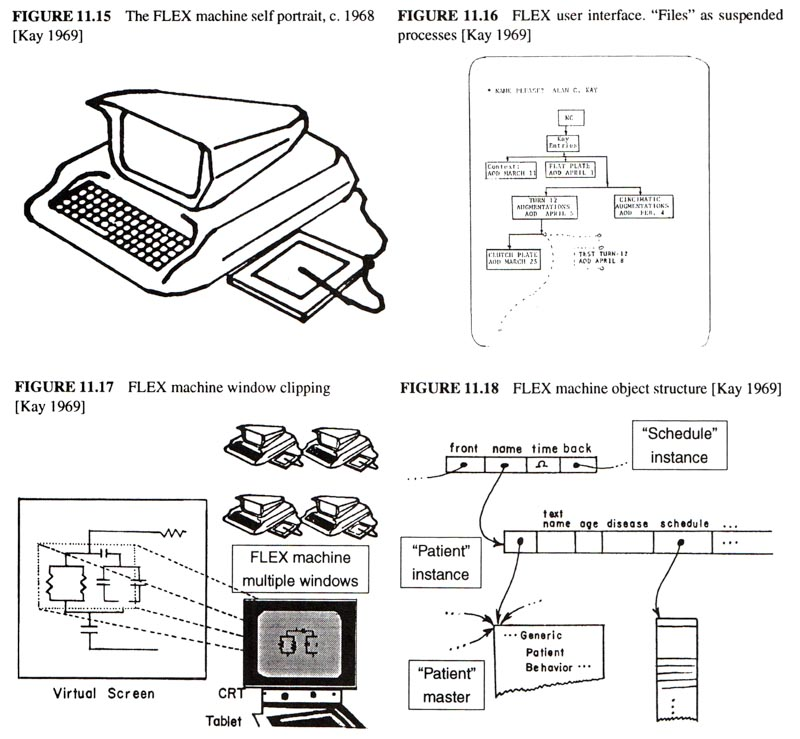Як і в Simula, структура керування, яка виконується співпрограмою(корутіною) [Conway, 1963] використовувався як спосіб призупинення та відновлення об’єктів. Постійні об’єкти, такі як файли та документи, розглядалися як призупинені процеси та були організовані відповідно до їхніх областей статичних змінних, подібних до Algol. Вони відображалися на екрані, і їх можна було відкрити, вказавши на них. Coroutining також використовувався як керуюча структура для циклу. Один оператор while використовувався для перевірки генераторів, які повертали false, коли не могли надати нове значення. Булеві значення використовувалися для зв'язку кількох генераторів. Отже, цикл "for-type" буде записаний так:
while i <= 1 to 30 by 2 ^ j <= 2 to k by 3 do j<-j * i;
де ... to ... by ... був свого роду об'єктом співпрограми. Пізніше багато з цих ідей було реалізовано в більш сильному стилі в Smalltalk.
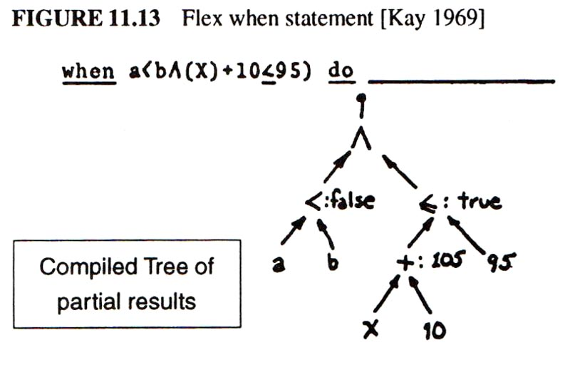Іншою структурою керування, яка представляла інтерес у FLEX, було свого роду кероване подіями «м’яке переривання», яке називається when. Його логічний вираз було скомпільовано в дерево «турнірного сортування», яке кешувало всі можливі проміжні результати. Відповідні змінні були пропущені через усі дерева сортування в усіх whens, так що будь-які зміни мали обчислювати лише необхідні частини логічних значень. Ефективність була дуже високою та була подібною до методів, які зараз використовуються для електронних таблиць. Це було збентеження багатства з труднощами, які часто зустрічаються в системах, керованих подіями. А саме, було складним завданням контролювати контекст того, коли саме коли має бути чутливим. Частину логічного виразу потрібно було використати для перевірки контекстів, де я вважав, що якимось чином структура програми повинна мати можливість установлювати та вимикати драйвери подій. Виявилося, що це виходить за рамки системи FLEX і потрібно чекати на кращу архітектуру.
Тим не менш, досить багато оригінальних ідей FLEX у формі протооб’єкта виявилися досить малими, щоб бути реалізованими на машині. Я писав перший компілятор, коли сталося щось незвичайне: аспірантів штату Юта запросили на зустріч підрядників ARPA, що відбулася того року в Альті, штат Юта. Наприкінці трьох днів Боб Тейлор, який змінив Івана Сазерленда на посаді керівника ARPA-IPTO, запитав аспірантів (сиділи в кільці навколо 20 чи близько того підрядників), чи є у них якісь коментарі. Джон Уорнок підняв руку й зазначив, що оскільки всі аспіранти ARPA незабаром стануть колегами (а оскільки ми все одно виконали всю реальну роботу), ARPA має щороку проводити зустрічі підрядників для аспірантів. Тейлор подумав, що це чудова ідея, і запланував її на наступне літо.
Пізніше тієї весни в Парк-Сіті відбулася ще одна зустріч у гірськолижному будинку. Загальною темою була освіта, і це був перший раз, коли я почув виступ Марвіна Мінскі. Він висунув приголомшливу критику традиційних методів освіти, і від нього я вперше почув ідеї Піаже та Пеперта. Доповідь Марвіна була про те, як ми думаємо про складні ситуації та чому школи – справді погане місце для навчання цим навичкам. Йому не потрібно було робити жодних претензій щодо комп’ютерів+дітей, щоб довести свою думку. Було зрозуміло, що освіта та навчання мають бути переосмислені у світлі когнітивної психології 20-го століття та того, як насправді думають хороші мислителі. Обчислення з’являються як нова система представлення з новими та корисними метафорами для роботи зі складністю, особливо систем [Minsky 70].
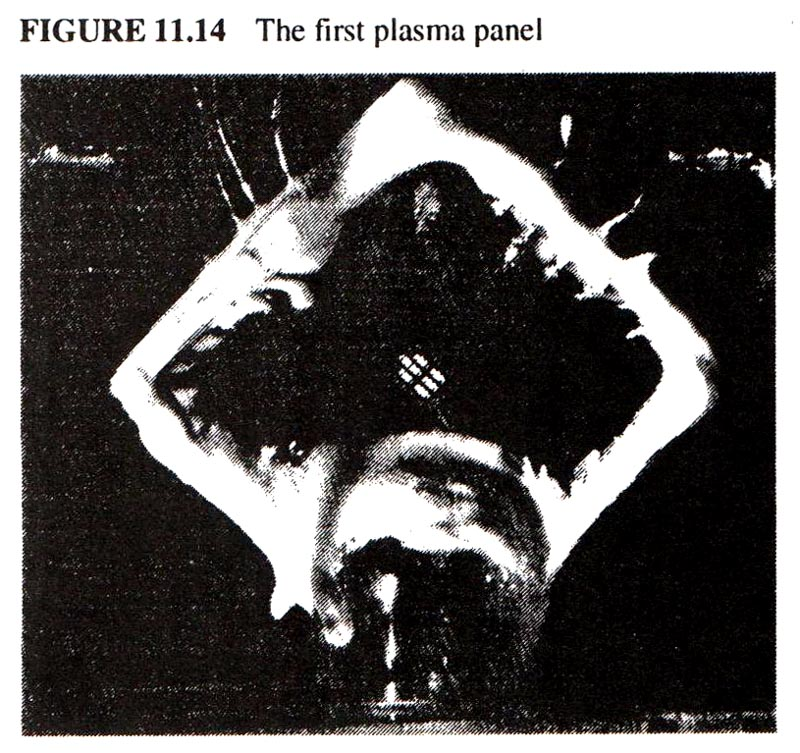965 / 5,000 Під час зустрічі аспірантів ARPA влітку 1968 року в Allerton House в Іллінойсі я зібрав усі механізми машини FLEX в одну діаграму 2'x3'. Це включало всі «структури об’єктів», компілятор, інтерпретатор байт-коду, обробники введення/виведення та простий редактор відображення для тексту та графіки. Аспіранти були видатною групою, яка дійсно стала колегою в наступні роки. Моя розмова про машину FLEX мала успіх, але великий удар для мене стався під час поїздки в Університет Іллінойсу, де я побачив 1-дюймовий квадратний шматок скла та неону, у якому окремі плями спалахували за командою – це була перша квартира Я провів решту конференції, обчислюючи, коли кремній машини FLEX можна поставити на задню частину дисплея, відповідь, здавалося, була десь наприкінці сімдесятих чи на початку. вісімдесятих. Довга перерва – тоді це здавалося занадто довгим, щоб про це багато хвилюватися.
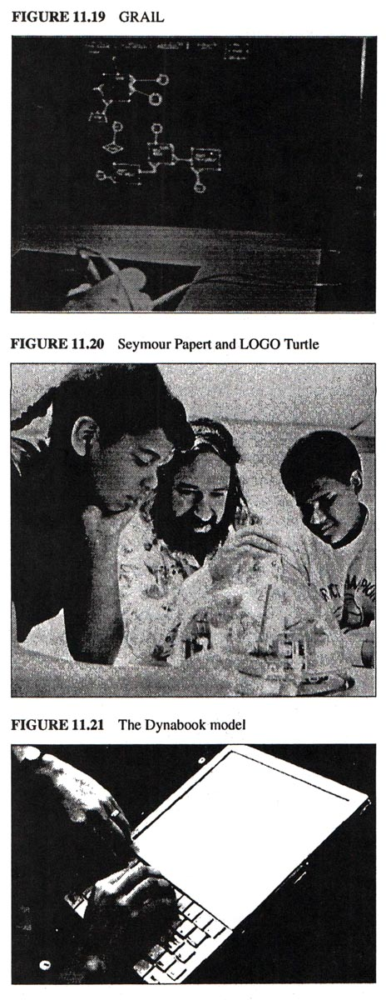747 / 5,000 Але пізніше того ж року в RAND я побачив справді прекрасну систему. Це був GRAIL, графічний продовжувач JOSS. Першу табличку (знамениту табличку RAND) винайшов Том Елліс [Davis 1964] щоб зафіксувати людські жести, і Гейв Гронер написав програму для ефективного розпізнавання та відповіді на них [Groner 1966]. Незважаючи на те, що все було закріплено жувальною гумкою, і система часто виходила з ладу, я ніколи не забув свою першу взаємодію з цією системою. Це була пряма маніпуляція, це було аналогічно, це було модно, це було красиво. Я зрозумів, що інтерфейс FLEX був неправильним, але як можна було вставити щось на зразок GRAIL у таку крихітну машину, оскільки для її роботи потрібне весь автономний 360/44?
Через місяць я нарешті відвідав Сеймура Пейперта, Воллі Фьорціга, Синтію Соломон та деяких інших оригінальних дослідників, які створили LOGO та використовували його з дітьми в школах Лексінгтона. Тут діти займалися справжнім програмуванням зі спеціально розробленою мовою та середовищем. Як і у випадку з Simula, що привела до ООП, ця зустріч нарешті вразила мене, якою справді буде доля персональних комп’ютерів. Не особистий динамічний транспортний засіб, як у метафорі Енгельбарта на противагу «залізницям» IBM, а щось набагато глибше: особистий динамічний носій. З транспортним засобом можна почекати, поки середньої школи і давати "шоферів", але якщо це був середній, він мав продовжуватись у світ дитинства.
Тепер зіткнення машини FLEX, дисплею з плоским екраном, GRAIL, розмови Бартона про «комунікації», Маклюена та роботи Пейперта з дітьми — усе це об’єдналося, щоб сформувати образ того, яким насправді має бути персональний комп’ютер. Я згадав Альда Мануція, який через 40 років після друкарського верстата надав книжці її сучасного розміру, поставивши її в сідельні сумки. Він мав бути не більшим за ноутбук і потребував такого ж дружнього інтерфейсу, як у JOSS, GRAIL і LOGO, але з досяжністю Simula та FLEX. Чітке романтичне бачення має дивовижну здатність зосереджувати думку та волю. Тепер було легко знати, що робити далі. Я побудував його картонну модель, щоб побачити, як він виглядатиме та на дотик, і налив свинцевих гранул, щоб побачити, наскільки він повинен бути легким (менше двох фунтів). Я розмістив на ньому клавіатуру та стилус, тому що, навіть якщо ручний друк і письмо розпізнаються ідеально (і не було жодних причин очікувати, що це буде), все одно повинен бути баланс між низькими тактильними ступенями свобода, яку пропонують стилус і більш обмежена, але швидша клавіатура. Оскільки ARPA почала експериментувати з пакетним радіозв’язком, я очікував, що Dynabook, коли він з’явиться приблизно через десять років, матиме систему бездротової мережі.
На початку наступного року (1969) відбулася конференція з розширюваних мов, на якій були присутні майже всі відомі імена в цій галузі. Дискусія була великою і вагомою – це була релігійна війна нереалізованих, погано продуманих ідей. Як сказав Алан Перліс, один із видатних людей у галузі інформатики, з характерною дотепністю:
Я давно не бачив стільки знайомих облич, які кричали серед такої кількості знайомих ідей. Відкриття чогось нового в мовах програмування, як і будь-яке відкриття, має приблизно таку ж послідовність емоцій, як і закоханість. Різке піднесення, яке супроводжується ейфорією, відчуттям унікальності та, зрештою, блукаючими очима (прагнення до узагальнення) [ACM 69].
Але це були лише розмови – ніхто ще нічого не зробив. У розпал усього цього Нед Айронс піднявся і представив IMP, систему, яка вже працювала кілька років і була елегантнішою, ніж більшість непрацюючих пропозицій. Основна ідея IMP полягала в тому, що ви можете використовувати будь-яку фразу в граматиці як заголовок процедури та написати семантичне визначення в термінах мови, розширеної до цього часу. [Irons 1970].
Я вже створив першу версію машинного синтаксису FLEX, де значення фрази було визначено більш звичним способом, як вид коду, який випромінював. Це відокремило компілятор-розширювач частини системи від кінцевого користувача. У підході Айронса кожна процедура в системі визначала власний синтаксис у природний і корисний спосіб. Я включив ці ідеї в другу версію машини FLEX і почав експериментувати з ідеєю прямого інтерпретатора, а не компілятора, керованого синтаксисом. Десь у всьому цьому я зрозумів, що міст до об’єктно-орієнтованої системи може бути з точки зору кожного об’єкта як синтаксисно спрямованого інтерпретатора повідомлень, які йому надсилаються. Одним махом це об’єднає об’єктно-орієнтовану семантику з ідеалом повністю розширюваної мови. Ментальний образ був одним із окремих комп’ютерів, які надсилали запити іншим комп’ютерам, які мали бути прийняті та зрозумілі одержувачами, перш ніж щось могло статися. У сучасних термінах кожен об’єкт був би сервером, що пропонує послуги, розгортання та розсуд яких повністю залежать від уявлення сервера про відносини з обслуговуваним. Як сказав Лібніц: «Щоб отримати все з нічого, потрібно знайти лише один принцип». Це було недостатньо добре продумано, щоб принести користь машині FLEX, але стало гарною відправною точкою для моєї дисертації [Kay 69], яка, як любив казати Іван Сазерленд, була «все, що можна змусити трьох людей підписати».
Після того, як троє людей підписали його (один із них був Іван), я пішов до Стенфордського проекту штучного інтелекту та витрачав набагато більше часу на роздуми про ноутбук KiddyKomputers, ніж про штучний інтелект. Але було два дизайни ШІ, які були дуже інтригуючими. Першим був PLANNER Карла Г’юітта, програмована логічна система, яка сформувала дедуктивну основу SHRDLU Вінограда [Sussman 69, Hewitt 69]. Я розробив кілька мов на основі комбінації схем зіставлення шаблонів FLEX і PLANNER [Kay 70]. Другим дизайном була система формування понять Пета Вінстона, схема для побудови семантичних мереж і їх порівняння для формування аналогій і процесів навчання [Winston 70]. Це було свого роду «об'єктно-орієнтоване». Одна з багатьох хороших ідей полягала в тому, що дуги кожної мережі, які слугували атрибутами в потрійках AOV, самі повинні бути змодельовані як мережі. Таким чином, наприклад, дузі першого порядку під назвою LEFT-OF можна було б поставити питання вищого порядку, наприклад "Яке ваше протилежне?" і його мережа може відповісти: ПРАВО-З. Ця точка зору пізніше лягла в основу каркасних систем Мінського [Minsky 75]. Кілька років потому я пошкодував, що не звернув більше уваги на цю ідею.
Тієї осені я почув чудову розмову Батлера Лемпсона про CAL-TSS, операційну систему на основі можливостей, яка здавалася дуже «об’єктно-орієнтованою» [Lampson 69]. Непідробні покажчики (аля B5000) були розширені бітовими масками, які обмежували доступ до внутрішніх операцій об'єкта. Це підтвердило мою метафору «об’єкти як сервер». Існував також дуже гарний підхід до обробки винятків, який нагадав мені спосіб обробки помилок у системах зіставлення шаблонів. Єдина проблема, яку розробники CAL не бачили як проблему, полягала в тому, що лише певні (зазвичай великі та повільні) речі були «об’єктами». Швидких речей і дрібниць тощо не було. Це потрібно було виправити.
Найбільшим ударом для мене під час роботи в SAIL наприкінці 69-го було справжнє розуміння LISP. Звичайно, кожен студент знав про car, cdr і cons, але Юта була бідна, оскільки там ніхто не використовував LISP, а отже, ніхто не проникав у таємниці eval і apply. Я ледве міг повірити, наскільки прекрасною та чудовою була ідея LISP [McCarthy 1960]. Я кажу це так, тому що LISP існувало не тільки достатньо, щоб отримати кілька чесних вусонів, але ще гірше, були глибокі недоліки в його логічних основах. Під цим я маю на увазі, що чиста мова мала бути заснована на функціях, але її найважливіші компоненти, такі як лямбда-вирази, лапки та умови, взагалі не були функціями, а натомість їх називали спеціальними формами. Ландіну та іншим вдалося отримати котирування та умови в термінах лямбда за допомогою різноманітних хитрих і корисних трюків, але недолік залишився в коштовності. На практиці все було краще. Існували не просто EXPR (які оцінювали свої аргументи), а й FEXPR (які цього не робили). Моє наступне запитання було: навіщо це називати функціональною мовою? Чому б просто не заснувати все на FEXPR і не змусити оцінити приймаючу сторону, коли це необхідно? Я ніколи не міг отримати хорошу відповідь, але це запитання було дуже корисним, коли прийшов час винаходити Smalltalk, тому що це започаткувало хід думок, який казав: «Візьміть найскладнішу та найглибшу річ, яку вам потрібно зробити, зробіть її чудовою, а потім будувати з цього все легше». Це була обіцянка LISP, і спокуса лямбда – потрібна була краща «найскладніша та найглибша» річ. Це повинні бути об’єкти.
У липні 1970 року компанія Xerox, за наполяганням свого головного наукового співробітника Джека Голдмана, вирішила створити центр довгострокових досліджень у Пало-Альто, Каліфорнія. У вересні Джордж Пейк, колишній ректор Вашингтонського університету, де розташовувався проект ARPA Веса Кларка, найняв Боба Тейлора (який покинув офіс ARPA і брав відпустку в Юті), щоб створити «Лабораторію комп’ютерних наук». Боб відвідав Пало-Альто, і ми не спали всю ніч, розмовляючи про це. Поправка Менсфілда погрожувала сліпо обмежити фінансування найбільш освічених ARPA на користь безпосередньо військових досліджень, і ця нова можливість виглядала багатообіцяючою альтернативою. Але працювати на компанію? Він хотів, щоб я проконсультувався, і я запитав напрямок. Він сказав: дотримуйтесь своїх інстинктів. Я негайно почав розробляти нову версію KiddiKomp, яку можна було б виготовити в достатній кількості, щоб проводити експерименти, що призвели до дизайну інтерфейсу користувача для можливого блокнота. Боб Бартон любив казати, що «хороші ідеї не часто мають масштаб». Він, безумовно, мав рацію, коли застосовувався до машини FLEX. B5000 просто не перетворився на крихітну машину. Діяли лише байт-коди, і навіть вони потребували модифікації. Я вирішив ще раз поглянути на LINC Веса Кларка і був готовий оцінити його набагато більше цього разу [Clark 1965].
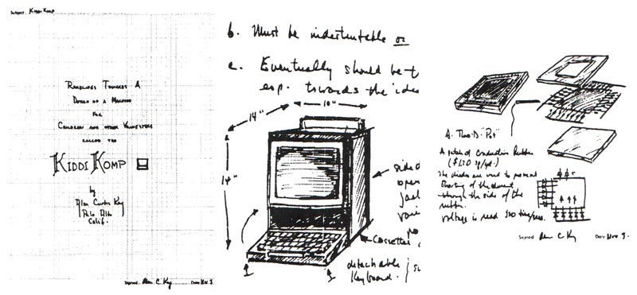Мені все ще подобалися підходи, орієнтовані на шаблони, і ООП, тому я придумав мовний дизайн під назвою «Simulation LOGO» або скорочено SLOGO (у мене було відчуття, що перші версії можуть працювати добре й повільно). Він мав бути вбудований у «животний тринітрон» SONY і використовуватиме грубий растровий дисплей і машинний гумовий планшет FLEX як вказівний пристрій.
Ще одна чудова система, з якою я стикався, це PDP-1 LISP Пітера Дойча (реалізований, коли йому було всього 15 років) [Deutsch 1966]. Він використовував лише 2K (18-бітних слів) коду і міг досить добре працювати на машині 4K (це була його власна операційна система та інтерфейс). Здавалося, що можна було б зробити ще більше, якби система була байт-кодована, керована архітектурою, яка була б гостинною для динамічних систем, і застрягла в дедалі більших ПЗУ, які ставали доступними. Одна з основних ідей, яку я отримав від Сеймура, полягала в тому, що не потрібно багато робити, щоб зробити комп’ютер «об’єктом для роздумів» для дітей, але те, що ви робите, має бути зроблено добре та вміти глибоко застосовуватися.
Відразу після Нового 1971 року Боб Тейлор здійснив величезний переворот, залучивши до PARC більшу частину бореться Berkeley Computer Corp. До цієї групи входили Батлер Лемпсон, Чак Такер, Пітер Дойч, Джим Мітчелл, Дік Шоуп, Віллі Сью Гаугеланд і Ед Фіала. Джим Мітчелл закликав групу найняти Еда МакКрейта з CM, і він незабаром прибув. Гарі Старквезер уже був там, його вигнали з Xerox Rochester Labs за бажання створити лазерний принтер (що суперечило місцевій релігії). Невдовзі багато людей Дага Енглбарта об’єдналися – частково тому, що вони хотіли повторно впровадити NLS як розподілену мережеву систему, а Даг хотів залишитися на розподілі часу. До групи входили Білл Інгліш (співавтор миші), Джефф Руліфсон і Білл Пакстон.
Майже одразу у нас виникли проблеми з Xerox, коли група вирішила, що нова лабораторія потребує PDP-10 для продовження роботи зі спільнотою ARPA. Xerox (який купив SDS, по суті, небаченим за кілька років тому) був у жаху від ідеї використання комп’ютера їх головного конкурента в лабораторії. Вони відмовилися. Щойно сформована група PARC провела зустріч, на якій було вирішено, що на створення хорошої операційної системи для XDS SIGMA-7 знадобиться близько трьох років, але ми можемо створити «наш власний PDP-10». "через рік. Моя реакція була "Свята корова!" Насправді, вони витягли це зі значною розмахом. MAXC був фактично мікрокодованою емуляцією PDP-10, яка вперше використовувала нову вбудовану пам’ять чіпа (1K біт!) замість основної пам’яті. Мати практичний власний досвід роботи з обома цими новими технологіями було критично важливо для більш радикальних систем у майбутньому.
Один невеликий випадок краси LISP стався, коли Аллен Ньюелл відвідав PARC зі своєю теорією ієрархічного мислення, і йому було поставлено завдання довести це. Під час збору протоколу йому дали програмну задачу для вирішення. Проблема полягала в тому, щоб отримати список елементів, створити список, що складається з усіх непарних індексованих елементів, за якими йдуть усі парні індексовані елементи. Внутрішня мова програмування Ньюелла нагадувала IPL-V, у якій вказівники маніпулювали явно, і йому довелося важко створити програму. За 2 секунди я записав:
oddsEvens(x) = append(odds(x), evens(x))
формулювання проблеми в синтаксисі LISP Ландіна—а також перша частина рішення. Потім через кілька секунд:
where odds(x) = if null(x) ∨ null(tl(x)) then x
else hd(x) & odds(ttl(x))
evens(x) = if null(x) ∨ null(tl(x)) then nil
else odds(tl(x))
Ця характеристика записувати багато рішень у декларативній формі та використовувати їх також як програми є частиною привабливості та краси такого роду мови. Спостерігати, як відомий хлопець, набагато розумніший за мене, більше 30 хвилин бореться, щоб не повністю вирішити проблему по-своєму (була помилка), справило велике враження. Мені знову стало ясно, що «точка зору коштує 80 балів IQ». Я не був розумнішим, але мав набагато кращий внутрішній інструмент мислення, щоб розширити свої здібності. Цей інцидент та інші подібні до нього зробили першорядним те, що будь-який інструмент для дітей повинен мати чудові моделі мислення і «вбудовану» глибоку красу.
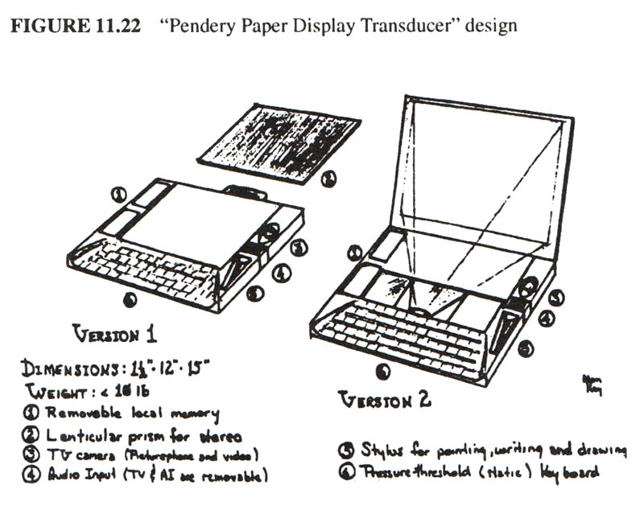Приблизно в цей час ми були втягнуті в черговий конфлікт із керівництвом Xerox, зокрема з Доном Пендері, головним «планувальником». Він справді не розумів, про що ми говоримо, і натомість цікавився «тенденціями» та «яким буде майбутнє» і як Xerox може «захиститися від цього». Я був настільки засмучений, що сказав йому: «Слухай. Найкращий спосіб передбачити майбутнє — це винайти його. Не турбуйся про те, що можуть зробити всі ці інші люди, це століття, в якому майже будь-яке чітке бачення можна зробити!" Його не переконали, і це призвело до знаменитих «Документів Пендері для цілей планування PARC», збірки есе про різні аспекти майбутнього. Моя версія ноутбука була запропонована як «Display Transducer», а версія Джима Мітчелла мала назву «NLS на міні-комп’ютері».
Білл Інгліш взяв мене під свою опіку та допоміг створити мою групу, оскільки я завжди був самотнім вовком і не мав уявлення, як це зробити. Однією з його пропозицій було те, що я повинен скласти бюджет. Боюся, я справді запитав Білла: "Що таке бюджет?" Я пригадав, як у штаті Юта, у дні до прийняття поправки Менсфілда, Дейв Еванс сказав мені, коли він вирушив у поїздку до ARPA: «У нас майже закінчилися гроші. Треба йти отримати ще». Мені це здавалося правильним. Вони дають вам трохи грошей. Ви витрачаєте їх, щоб дізнатися, що робити далі. Ви закінчилися. Вони дають вам ще трохи. І так далі. PARC так і не досяг цього ідилічного стандарту, але протягом першої половини десятиліття він наблизився до нього. Мені потрібна була група, тому що я нарешті зрозумів, що не маю всіх темпераментів, необхідних для того, щоб повністю завершити ідею. Я назвав це Групою дослідження навчання (LRG), щоб бути якомога розпливчастішим щодо нашого статуту. Я найняв лише тих людей, які отримали зірки в очах, коли почули про ідею ноутбука. Мені не подобалися зустрічі: я не вірив, що мозковий штурм може замінити круті стійкі думки. Коли хтось запитував мене, що робити, а я не мав чіткого уявлення, я вказував на модель ноутбука і казав: «Попередньо». Члени LRG налагодили дуже тісні стосунки один з одним, як пізніше сказав Ден Інґоллс: «... решта стало результатом любові та енергії всієї дослідницької групи навчання». Багато дня ми проводили за межами PARC, грали в теніс, каталися на велосипеді, пили пиво, їли китайську їжу та постійно говорили про Dynabook та його потенціал розширити охоплення людей і принести нові способи мислення цивілізації, що похитнулася, яка відчайдушно потребувала цього ( такі цілі були поширені в Каліфорнії після шістдесятих років).
Влітку 1971 року я вдосконалив ідею KiddiKomp у більш щільний дизайн під назвою miniCOM. Він використовував бітовий підхід, як у NOVA 1200, мав дисплей з бітовою картою, вказівний пристрій, вибір «вторинних» (насправді третинних) накопичувачів і мову, яку я тепер називаю «Smalltalk» – як «програмування». повинно бути питанням ..." і "діти повинні програмувати в ...". Ця назва також була реакцією на «індоєвропейську теорію богів», де системи називалися Зевсом, Одіном і Тором і майже нічого не робили. Я подумав, що "Smalltalk" настільки нешкідливий лейбл, що якби він колись зробив щось приємне, люди були б приємно здивовані.
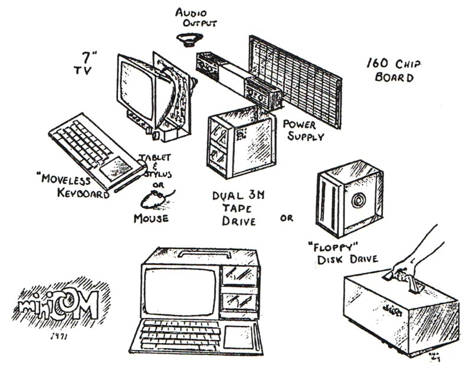
Програми Smalltalk-71
to T 'and' :y do 'y'
to F 'and' :y do F
to 'factorial' 0 is 1
to 'factorial' :n do 'n*factorial n-1'
to 'fact' :n do 'to 'fact' n do factorial n. ^ fact n'
to :e 'is-member-of' [] do F
to :e 'is-member-of' :group
do'if e = firstof group then T else e is-member-of rest of group'
to 'cons' :x :y is self
to 'hd' ('cons' :a :b) do 'a'
to 'hd' ('cons' :a :b) '<-' :c do 'a <- c'
to 'tl' ('cons' :a :b) do 'b'
to 'tl' ('cons' :a :b) '<-' :c do 'b <- c'
to :robot 'pickup' :block
do 'robot clear-top-of block.
robot hand move-to block.
robot hand lift block 50.
to 'height-of' block do 50'
Ця мова Smalltalk (сьогодні позначена як -71) була під великим впливом FLEX, PLANNER, LOGO, META II та моїх власних похідних від них. Це був свого роду синтаксичний аналізатор із приєднанням об’єктів, який безпосередньо виконував токени. (Я думаю, що незручні умови цитування походять від META). Мене менше цікавили програми як алгебраїчні шаблони, ніж чітка схема, яка могла б працювати з різними стилями програмування. Інтерфейс із шаблонами дозволяв просте розширення, шаблони як «дані» для отримання, простий спосіб прикріплення поведінки до об’єктів і рудиментарне, але чітке вираження його eval у термінах, які, як я думав, могли б діти зрозуміти після кількох років досвіду простішого програмування. Зберігання програм було відсортовано в мережу розрізнення, а оцінка була простою за зразком.
Як я вже згадував раніше, було неприємно, що поверхнева краса LISP була затьмарена тим, що деякі з його ключових частин доводилося вводити як «спеціальні форми», а не як передбачуваний універсальний будівельний блок функцій. Фактична краса LISP випливає більше з обіцянок його метаструктур, ніж з його фактичної моделі. Я витратив чимало часу на роздуми про те, як можна охарактеризувати об’єкти як універсальні комп’ютери без жодних винятків у центральній метафорі. Здавалося, що потрібен повний контроль над тим, що передається в повідомленні; зокрема, коли та в якому середовищі вирази були оцінені?
Елегантний підхід був запропонований у дисертації Дейва Фішера (CMU) [Fisher 70] щодо синтезу керуючих структур. ALGOL60 потребував окремого посилання для динамічного зв’язування підпрограм і для доступу до статичного глобального стану. Фішер показав, як узагальнення цих зв'язків можна використовувати для моделювання широкого спектру керуючих середовищ. Один із способів вирішення «проблеми funarg» LISP полягає в тому, щоб пов’язати правильний зв’язок глобального стану з виразами та функціями, які мають бути оцінені пізніше, щоб вільні змінні, на які посилаються, були тими, які фактично передбачалися статичною формою мова. Тут також передбачено поняття «лінива обчислювання».
Сьогодні цей підхід можна назвати відбиваючим дизайном. Поєднання його разом із моделями FLEX припускає, що все, що потрібно для «правильного виконання LISP» або «правильного виконання ООП» — це обробка механізмів викликів між модулями, не турбуючись про деталі самих модулів. Тоді різниця між LISP та ООП (або будь-якою іншою системою) полягатиме в тому, що можуть містити модулі. Посилання на універсальний модуль (об’єкт) —як B5000 і LISP—і структура зберігання повідомлення—яка могла б бути віртуальною, якби відправники й одержувачі були взаємодіючими— який міг би використовувати кожен, виконає свою роботу.
Якби всі поля структури месенджера були перераховані відповідно до цього погляду, ми мали б:
| GLOBAL: | середовище значень параметрів |
| SENDER: | відправник повідомлення |
| RECEIVER: | одержувач повідомлення |
| REPLY-STYLE: | wait, fork, ...? |
| STATUS: | прогрес повідомлення |
| REPLY: | кінцевий результат (якщо є) |
| OPERATION SELECTOR: | відносно приймача |
| # OF PARAMETERS: | |
| P1: | |
| ...: | |
| Pn: |
Це узагальнення кадру стека, який використовується в B5000, і дуже схоже на те, що вимагала б хороша міжмодульна схема в операційній системі, такій як CAL-TSS – багато стану для кожної транзакції, але корисно подумати .
Значна частина роздумів під час цього стану благодаті (до будь-якої працездатної реалізації) була пов’язана зі спробами зрозуміти, що може означати «красиве» стосовно об’єктно-орієнтованого дизайну. Суб’єктивне визначення красивої речі досить просте, але не дуже корисне: ми вважаємо річ красивою, тому що вона викликає певні емоції. Кліше стверджує, що воно лежить «в очах глядача», тому важко думати про красу як про відношення між суб’єктом і об’єктом, у якому всі схильності суб’єкта є важливими.
Якщо існує таке поняття, як універсально привабливі форми, тоді ми можемо шукати схильності до нашої спільної біологічної спадщини. Але для такого об’єкта, як LISP, майже напевно, що більша частина основи нашого судження є вивченою та має багато спільного з іншими спорідненими областями, які ми вважаємо прекрасними, такими як велика частина математики.
Частина уявної краси математики пов’язана з дивовижною синергією між скупістю, загальністю, просвітництвом і тонкістю. Наприклад, теорему Піфагора можна виразити одним рядком, вона справедлива для нескінченної кількості прямокутних трикутників, неймовірно корисна для розуміння багатьох інших взаємозв’язків і може бути продемонстрована кількома простими, але глибокими кроками.
Коли ми звертаємося до різних мов для специфікації обчислень, ми знаходимо, що багато з них є загальними, а деякі – скупими. Наприклад, ми можемо визначити універсальні машинні мови лише кількома інструкціями, які можуть вказати все, що можна обчислити. Але більшість із них ми б не назвали красивими, частково через те, що кількість і тип коду, який потрібно написати, щоб зробити щось цікаве, є настільки надуманим і напруженим. Проста і невелика система, яка може робити цікаві речі, також потребує «високого нахилу», тобто відповідності між ступенем цікавості та рівнем складності, необхідним для її вираження.
Запліднена яйцеклітина, яка може трансформуватись у безліч спеціалізацій, необхідних для створення складного організму, має скупість, загальність, просвітлення та витонченість, коротше кажучи, красу та красу, яка більше відповідає моїй власній естетиці. Під цим я маю на увазі те, що Природа чудова і як в елегантності, так і в практичності – клітинна мембрана частково існує для того, щоб дозволити корисним еволюційним ланкам виконувати свою необхідну роботу та все ще мати змогу діяти як компонент, представляючи єдиний інтерфейс для світ.
Одним із моїх постійних занепокоєнь у цей час був розмір растрового дисплея. Навіть якщо використовувався змішаний режим (між дрібнозернистими згенерованими символами та крупнозернистим загальним растровим зображенням для графіки), було б важко отримати достатньо інформації на екрані. Мені спало на думку (під душем, моїм улюбленим місцем для роздумів), що вікна типу FLEX на растровому дисплеї можна змусити виглядати як документи, що перекриваються, на робочому столі. Коли перекривається оновлено, здається, що він потрапляє на вершину стека. На той час це не здавалося чудовим вирішенням проблеми, але воно мало ефект надзвичайного збільшення ефективної площі дисплея, тому я вирішив піти з ним.
Щоб дослідити використання відео як засобу відображення, Білл Інгліш і Батлер Лемпсон запропонували експериментальний генератор символів (створений Роджером Бейтсом) для терміналів POLOS (PARC OnLine Office System). Гері Старквезер щойно запустив перший лазерний принтер, і ми провели коаксіальний пристрій до його лабораторії, щоб надати йому текст для друку. «СЛОТ-машина» (скануючий лазерний вихідний термінал) була неймовірною. Єдиний копіювальний апарат Xerox, на якому міг взятися Гері, працював зі швидкістю 1 сторінка за секунду, і його неможливо було сповільнити. Отже, Гері щойно змусив лазер працювати з такою швидкістю з роздільною здатністю 500 пікселів на дюйм!
Пам'ять шрифтів генератора символів виявилася достатньо великою, щоб імітувати відображення растрової карти, якщо відобразити фіксовану "зачіску" та записати в пам'ять шрифтів. Бен Лоуз створив прекрасний редактор шрифтів, і ми з ним кілька місяців вивчали особливості людської зорової системи (вона однозначно нелінійна). Я був дуже зацікавлений у високоякісних текстових і графічних презентаціях, тому що вважав, що було б легше впровадити Dynabook у школи як «троянського коня», просто замінивши шкільні підручники, а не намагаючись пояснити вчителям і шкільним радам, що насправді чудово ставиться до персональних комп’ютерів.
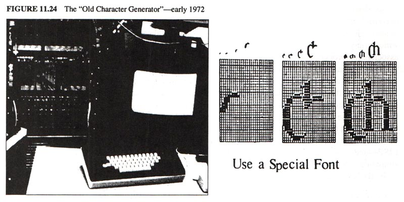Загалом справи в лабораторії йшли добре до травня 72 року, коли я спробував отримати ресурси для створення кількох miniCOM. Відносно новий керівник («X») не хотів їх мені давати. Я написав доповідну записку, пояснюючи, чому система була гарною ідеєю (див. Додаток II), а потім провів зустріч, щоб обговорити це. «X» повністю знищив це, сказавши, серед іншого, що ми використали занадто багато зелених марок, щоб Xerox профінансував MAXC із розподіленим часом, і таке використання ресурсів для персональних машин їх збентежило. Я був шокований. Я відповз назад до експериментального генератора персонажів і склав план створення ще 4 і підключення до NOVA для початкових дитячих експериментів.
Я запросив Стіва Перселла, літнього студента зі Стенфорда, створити мій дизайн для растрового малювання, щоб діти могли малювати ескізи, а також демонструвати комп’ютерну графіку. Джон Шох створив систему малювання ліній і розпізнавання жестів (на основі Ledeen [Newman and Sproull 72]), яка була інтегрована з картиною. Білл Дюваль з POLOS побудував miniNLS, який був надзвичайно швидким і потужним. Почали з'являтися перші вікна, що перекриваються. Боб Шур (за допомогою Стіва Перселла) створив систему 2½D анімації. Разом із редактором шрифтів Бена Лоуза ми могли б дати приголомшливу демонстрацію того, що ми збиралися створити насправді протягом наступних кількох років. Я пам’ятаю, як подарував один із них керівнику Xerox, у тому числі зробив його портрет у новій системі малювання, і завершив це розкішною заявою: «І що в цьому справді чудово, так це те, що це має лише 20% шансів на успіх. .Ми ризикуємо, як ви нас просили!" Він подивився мені прямо в очі і сказав: «Хлопче, це чудово, але переконайся, що це працює». Це було типове уявлення керівників про ризик. Він хотів, щоб ми були в «20%» сто відсотків часу.
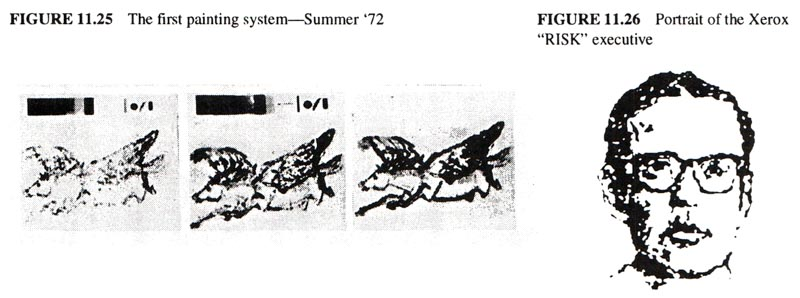Того літа, зализуючи мої рани та запускаючи демонстраційні симуляції, Батлер Лемпсон, Пітер Дойч і я розробили загальну схему для емульованих машинних мов HLL. Мені сподобалася схема B5000, але Батлер не хотів декодувати байти, і зазначив, що, оскільки 8-бітний байт має 256 загальних можливостей, що ми повинні зробити, це відобразити різні значення на різні частини «простору інструкцій». Це дало б нам «код Хаффмана для бідняків», який був би гнучким і простим. Усі наступні емулятори PARC використовували цю загальну схему.
Я також взяв ще один пропуск на мову для дітей. Джефф Руліфсон був великим шанувальником Піаже (і семіотики), і ми багато дискутували про «стадії» та про те, чим може бути культове мислення. Прочитавши Піаже та особливо Джерома Брунера, я хвилювався, що прямо символічний підхід, використаний FLEX, LOGO (і нинішнім Smalltalk), буде важко сприйняти дітям, оскільки існують докази того, що символічна стадія (чи менталітет) тільки починає увімкнути. Насправді всі педагоги, якими я захоплювався (включаючи Монтессорі, Холт і Сузукі), здавалося, закликали до більш образного, більш знакового підходу. Рудольф Арнхайм [Arnheim 69] написав класичну книгу про візуальне мислення, як і видатний мистецтвознавець Гомбріх [Gombrich **]. Справді здавалося, що тут треба робити щось краще. GRAIL не був цим, тому що він використовував зображення для зображення та редагування блок-схем, що здавалося чудовим кроком назад. Але AMBIT-G Ровнера містив значно більше перспектив [Rovner 68]. Це був начебто візуальний SNOBOL [Farber 63], і ідеї зіставлення шаблонів здавалося, що вони підійдуть для схеми, більш схожої на PLANNER, яку я використовував.
Білл Інгліш все ще заохочував мене робити більш розумні речі, які здавалися б, щоб завоювати довіру, як-от складати бюджети, писати плани та ключові нотатки, тож я написав план, який передбачав, що протягом наступних кількох років ми побудуємо справжню систему на основі генераторів символів cum NOVA, які включатимуть ООП, вікна, малювання, музику, анімацію та «культове програмування». Остання була визнана важкою і вирішувалась звичайним методом для складних задач, а саме – роздавати її аспірантам.
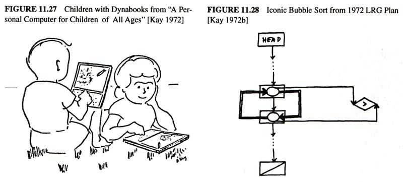У вересні, з різницею в кілька тижнів, відбулися дві парі, які змінили більшість моїх планів. Спочатку підійшли Батлер і Чак і запитали: «У вас є гроші?» Я сказав: "Так, приблизно 230 тисяч доларів за NOVA та CG. Чому?" Вони сказали: "Як би ви хотіли, щоб ми побудували для вас вашу маленьку машину?" Я сказав: "Я б хотів, щоб це було добре. Що це?" Батлер сказав: «Я хочу «PDP-10 за 500 доларів», Чак хоче «в 10 разів швидше NOVA», а ти хочеш «kiddicomp». Що тобі на ньому потрібно?» Я розповів їм більшість результатів, які ми отримали за допомогою вивчення шрифтів, малювання, роздільної здатності, анімації та музики. Я запитав, звідки це раптом узялося, і Батлер сказав мені, що вони все одно хочуть це зробити, що виконавчий «X» був відсутній на кілька місяців у «оперативній групі», тож, можливо, вони могли б це «потайки» і що Чак побився об заклад з Біллом Вітіком, що зможе зробити цілу машину лише за 3 місяці. — Ой, — сказав я.
Друга ставка мала ще більш дивовижні результати. Я очікував, що нова мова Smalltalk стане культовою мовою, і на її створення знадобиться щонайменше два роки, але доля втрутилася. Одного разу, під час типової сесії в коридорі PARC, ми з Тедом Келером, Ден Інґоллс і я говорили про мови програмування. Піднялася тема влади, і вони задалися питанням, яку велику мову потрібно створити, щоб отримати велику владу. З такою щемливістю, на яку я міг зібрати, я стверджував, що ви можете визначити «найпотужнішу мову в світі» на «сторінці коду». Вони сказали: «Поклади або мовчи».
Тед повернувся до CMU, але Ден усе ще підбивав мене. Протягом наступних двох тижнів я приходив до PARC щоранку о четвертій годині й працював над проблемою до восьмої, коли Ден разом із Генрі Фуксом, Джоном Шохом і Стівом Перселлом з’явився на ранкову роботу.
Спочатку я похвалився, тому що самоописовий інтерпретатор LISP Маккарті був написаний сам по собі. Мова йшла про «сторінку», і, що стосується потужності, LISP був цілими дев’ятьма ярдами для функціональних мов. Я був абсолютно впевнений, що зможу зробити те саме для об’єктно-орієнтованих мов плюс мати можливість створити розумний синтаксис для коду a la з деякими техніками машини FLEX.
Це виявилося складніше, ніж я спочатку думав, з трьох причин. По-перше, я хотів, щоб програма була більше схожа на другий нерекурсивний інтерпретатор Маккарті – реалізований як цикл, який намагався максимально нагадувати оригінальну реалізацію 709 Стіва Рассела. Це було більш «справжнє». По-друге, переплетення «аналізу» з отриманням повідомлення —оцінка параметрів, яка оброблялася окремо в LISP—вимагала, щоб мій об’єктно-орієнтований інтерпретатор повторно вводив себе «швидше» (насправді, набагато раніше), ніж того вимагає LISP. І, нарешті, я все ще не зрозумів, як send і receive мають працювати одне з одним.
Кілька перших версій мали недоліки, які серйозно критикувалися групою. Але до 8 ранку або близько того з’явилася версія, яка, здавалося, спрацювала (див. Додаток III, де показано, як був розроблений інтерпретатор). Основні відмінності від офіційного Smalltalk-72, який був трохи пізніший, полягали в тому, що в першій версії символи були закодовані в байтах, а отримання повернених значень від надсилання було симетричним, тобто. квитанція може бути подібною до зв’язування параметрів – це особливо корисно для повернення кількох значень. З різних причин від цього відмовилися на користь більш орієнтованого на експресію функціонального стилю повернення.
Звичайно, я доклав чималих зусиль, щоб уникнути «справжньої роботи» за ставку, але я відчував, що довів свою правоту. Це була цікава відпустка від наших офіційних занять «культовим програмуванням», і я думав, що на цьому все закінчиться. На мій велике здивування, лише через кілька днів Ден Інгаллс показав мені схему, працюючу на NOVA. Він закодував його (у BASIC!), додав багато деталей, таких як сканер маркерів, створення списків тощо, і ось воно запущено. Як він любив казати: «Ти просто робиш це, і все готово».
Він обчислив 3+4 v e r y s l o w l y (це було «льодовикове», як любив казати Батлер), але відповідь завжди була 7. Що ж, нічого не залишалося робити, як продовжувати. Ден любив завантажувати систему, яка «завжди працювала», і протягом наступних десяти років він зробив щонайменше 80 великих випусків різних варіантів Smalltalk.
У листопаді я представив ці ідеї та демонстрацію схеми інтерпретації лабораторії MIT AI. Зрештою це призвело до більш формального підходу Карла Г’юїта «Актор» [Hewitt 73]. У першому документі Actor подібність до Smalltalk є найбільшою. Згодом шляхи розійшлися, частково тому, що ми були набагато більше зацікавлені у створенні речей, ніж у теоретизуванні, а частково тому, що у нас було те, чого ніхто інший не мав: Interim Dynabook Чака Текера (пізніше відомий як «ALTO»).
Незадовго до того, як Чак почав працювати над машиною, я надав до Національної ради вчителів англійської мови статтю [Kay 72c] про Dynabook і її потенціал як підсилювача навчання та мислення; ця стаття була розгорнутою глибокою копією «20 речей, які потрібно робити з Dynabook" [Kay 72c]. На той час, коли я повернувся з Міннесоти, стаття Стюарта Бренда Rolling Stone про PARC [Brand 1972] і навколишню спільноту хакерів потрапила на трибуни. На наш превеликий подив, це викликало великий фурор у штаб-квартирі Xerox у Стемфорді, штат Коннектикут. Хоча це була чудова стаття, яка справді вловила дух усієї культури, Xerox скаженів, змусив нас носити бейджики (з роками багато друкували на футболках) і суворо обмежив види публікацій, які можна було робити. Це було особливо катастрофічно для LRG, оскільки ми були «божевільною окраїною» (так називали інші комп’ютерні вчені), планували піти до шкіл і мали ділитися своїми ідеями (та програмами) з нашими колегами, такими як Сеймур Пеперт і Дон Норман.
Виконавчий «X», очевидно, почув різкі слова про нас у Стемфорді, бо коли він повернувся під Різдво та дізнався про тимчасовий Dynabook, він розлютився ще більше і спробував його вбити. Батлер завершив написання майстерного захисту машини, щоб утримати його, і повернувся до своєї «оперативної групи».
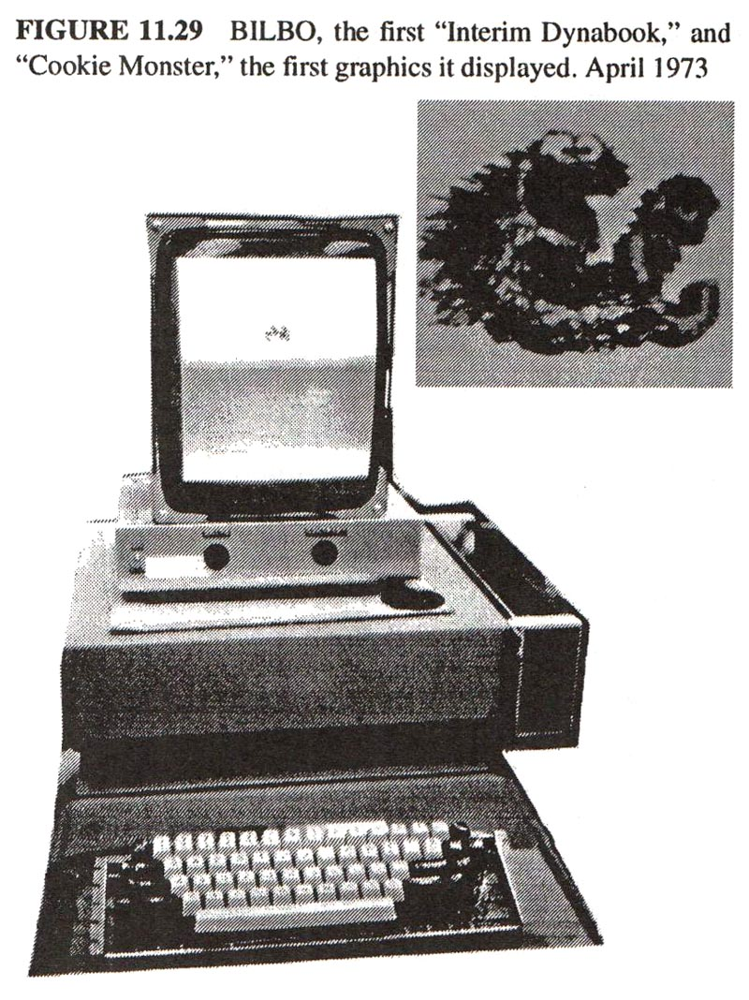Чак почав свою «ставку» 22 листопада 1972 року. Він і двоє техніків зробили всю машину, за винятком дискового інтерфейсу, який зробив Ед МакКрейт. Він мав ~500 000 пікселів (606x808) растровий дисплей, його швидкість інструкцій мікрокоду становила близько 6 MIPS, він мав загальну кількість 128 Кб, і вся машина (без пам’яті) відтворювалася в 160 мікросхемах MSI, розподілених на двох картах. Це було прекрасно [Thacker 1972, 1986]. Однією з чудових особливостей машини було «нульове накладне» завдання. Він мав 16 програмних лічильників, по одному на кожне завдання. Прапорці умов були прив’язані до цікавих подій (таких як «імпульс горизонтального відстеження», «імпульс сектору диска» тощо). Логіка Lookaside сканувала прапори під час виконання поточної інструкції та вибирала програмний лічильник із найвищим пріоритетом для отримання наступного. Машині ніколи не доводилося чекати, і в результаті більшість функцій апаратного забезпечення (зокрема ті, що передбачають введення-виведення (наприклад, подача дисплея та обробка диска) можна було замінити мікрокодом. Навіть оновлення динамічної оперативної пам’яті MOS було виконано Іншими словами, це була архітектура співпрограми. Чак стверджував, що він отримав ідею з лекції про співпрограми кілька місяців тому, але я пригадав, що TX-2 (машина Sketchpad) Веса Кларка використовував. ідея перша, і я, напевно, згадав про це в розмові.
На початку квітня, трохи більше ніж через три місяці від початку, світ побачив перший Interim Dynabook, відомий як «Більбо», і за лічені хвилини на екрані з’явилося перше растрове зображення: Печиво-монстр Маппетів, якого я намалював на нашій системі малювання.
Невдовзі Ден запустив Smalltalk, і протягом багатьох місяців це була єдина програмна система, яка працювала на Interim Dynabook. У Додатку I є документ «подяки», який я написав того часу, цікавий своїм розподілом кредитів і різноманітними пріоритетами, пов’язаними з ними. Моїх 230 тисяч доларів вистачило, щоб отримати 15 із початково запланованих 30 машин (протягом років було фактично створено близько 2000 Interim Dynabook). Відповідно до спостережень Шопенгауера, керівник «X» тепер вирішив, що Interim Dynabook — це хороша ідея, і він хотів усі, крім двох для своєї лабораторії (я був у іншій лабораторії) . Мені довелося докласти чимало зусиль, щоб повернути наші машини, але нарешті це вдалося.
До цього часу більшість схем Smalltalk були розбиті на шість основних
ідей, які узгоджувалися з початковими передумовами розробки
інтерпретатора. Перші три принципи – це те, що об’єкти «приваблюють», як
їх бачать і використовують «зовні». Вони не вимагали жодних змін протягом
багатьох років. Останні три—об’єкти зсередини—були змінені в
кожній версії Smalltalk (і в наступних дизайнах ООП). У цій схемі (1 і 4)
означають, що класи є об'єктами і що вони повинні бути екземплярами самих
себе. (6) передбачає універсальний синтаксис, схожий на LISP, але з
об’єктом-одержувачем першим елементом, за яким слідує повідомлення. Таким
чином, ci <- de (з індексом, що відображається
як "○" і множенням як "*") означає:
| приймач | | повідомлення |
| c | | ○ i <- d*e |
c прив’язано до об’єкта-одержувача, а все
○ i <- d*e це повідомлення для нього. Повідомлення
складається з буквального маркера «○», виразу, який потрібно оцінити
в контексті відправника (у цьому випадку i), іншого літерального маркера
<-, за яким слідує вираз, який потрібно оцінити в контексті відправника
( d*e). Оскільки пари «LISP» складаються з 2 об’єктів елемента, їх можна
простіше індексувати: c hd, c tl і
c hd <- foo тощо.
«Прості» вирази на зразок a+b і 3+4 спочатку здавалися більш проблемними. Чи дійсно було сенс думати про них як про:
| приймач | | повідомлення |
| a | | + b |
| 3 | | + 4 |
Здавалося б безглуздо, якщо розглядати лише цілі числа, але існує багато інших метафоричних прочитань «+», таких як:
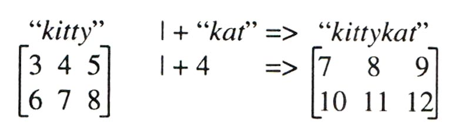 "kittykat" [3 4 5 6 7 8] |+ 4 = [7 8 9 10 11 12]' style="max-width: 216px" />Це призвело до стилю пошуку загальної поведінки для символів повідомлень. «Поліморфізм» є офіційним терміном (я вважаю, що походить від Strachey), але він не дуже підходить, оскільки його початкове значення застосовувалося лише до функцій, які можуть приймати більше одного типу аргументів. Приклад класу об’єктів у Smalltalk-72, наприклад модель пар CONS, виглядатиме так:
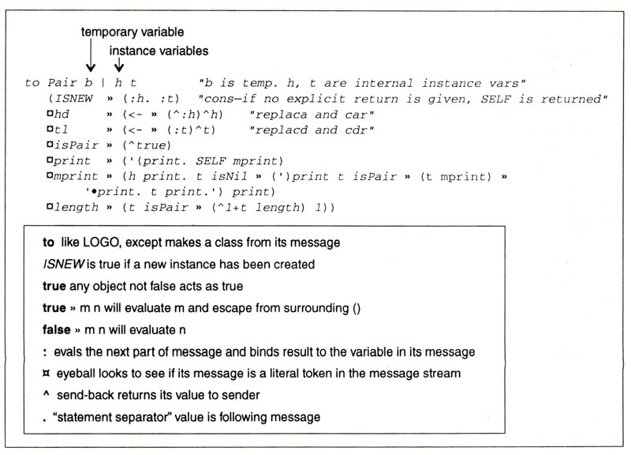Оскільки керування передається класу до розгляду будь-якої решти повідомлення—клас може вирішити не отримувати на власний розсуд—повний захист зберігається. Об’єкти Smalltalk-72 «блискучі» та непроникні для атак. Частиною середовища є прив’язка SENDER до «об’єкта месенджера» (узагальненого запису активації), який дозволяє одержувачу визначати різні привілеї (див. Додаток II для отримання додаткової інформації). Це передбачало можливе використання Smalltalk як мережевої ОС (Див. [Goldstein & Bobrow 1980]), і я не пригадую, щоб він дуже часто використовувався в Smalltalk-72.
Одним із стилів, збережених від Smalltalk-71, було поєднання функціональних і класових ідей. В інших роботах класи Smalltalk-72 виглядали і могли використовуватися як функції, але було легко створити екземпляр (своєрідне закриття) за допомогою об’єкта ISNEW. Таким чином факторіал можна записати "розширено" так:
to fact n (^if :n=0 then 1 else n*fact n-1)
або "intensional", як частина цілого числа класу:
(... ○! » (^:n=1) » (1) (n-1)!)
Звичайно, вся ідея Smalltalk (і ООП загалом) полягає у визначенні всього intensionaly. І це був напрямок руху, коли ми навчилися програмувати в новому стилі. Мені ніколи не подобався цей синтаксис (занадто багато дужок і вкладень), і я хотів чогось простішого та більше схожого на граматику, як у Smalltalk-71. Праворуч приклад синтаксису з нотаток моєї промови тоді. Ми побачимо щось більше подібне через кілька років у проекті Дена для Smalltalk-76. Я думаю, що щось подібне сталося з LISP – «реальність» прямолінійного та практичного синтаксису, у якому можна програмувати, переважала над польотами фантазії, які так і не були створені.
Пропонований синтаксис Smalltalk-72
Pair :h :t
hd <- :h
hd » h
tl <- :t
tl » t
isPair » true
print » '( print. SELF mprint.
mprint » h print. if t isNil then ') print
else if t isPair then t mprint
else '● print. t print. ') print
length » 1 + if t isList then t length else 0
Поява справжнього Smalltalk на реальній машині поклала початок вибуху паралельних шляхів, які надто важко переплести в строгому історичному порядку. Дозвольте мені спочатку представити загальний розвиток системи Smalltalk-72 до переходу на Smalltalk-76, а потім розповісти про декілька років роботи з дітьми, які були основною мотивацією для проекту. Інтерпретатор Smalltalk-72 у Interim Dynabook був не зовсім швидким («величний» — це висловлювання Батлера), але його було легко змінити та досить швидко, щоб у ньому можна було побудувати багато інтерактивних систем реального часу.
Вікна, що перекриваються, були першим проектом (з Діаною Меррі) після написання коду для читання клавіатури та створення рядка тексту. Діана створила ранню версію передачі блоку бітового поля (bitblt) для відображення шрифтів зі змінним кроком і загалом написання на дисплеї. Перші версії вікон створювалися як справжні 2½D об’єкти з можливістю перетягування, які були надто повільними, щоб бути корисними. Ми вирішили почекати, доки Стів Перселл не змусить свою анімаційну систему робити це правильно, і вибрали стиль, який використовується й сьогодні, який більше нагадує «2¼D». Windows була, мабуть, найбільш переробленим і перереалізованим класом у Smalltalk, тому що ми не мали достатньої обчислювальної потужності, щоб просто виконувати безперервний перегляд «світових координат» і оновлення, з яким мої колишні колеги з Юти почали експериментувати на проектах симулятора польоту в Evans & Сазерленд. Це проста, потужна модель, але її важко зробити в реальному часі навіть у 2½D. Перші практичні вікна в Smalltalk використовували конвенції GRAIL щодо чутливих кутів для переміщення, зміни розміру, клонування та закриття. Планування вікон використовувало просту «безциклову» схему керування, яка об’єднувала всі вікна разом.
Одним із наступних класів, які будуть реалізовані у Interim Dynabook (після основ чисел, рядків тощо), була об’єктно-орієнтована версія черепахи LOGO, реалізована Тедом. Це могло б створити багато екземплярів черепахи, які використовувалися як для малювання, так і як своєрідне значення для графічних перетворень. Ден створив клас «командирських» черепах, які могли керувати загоном черепах. Незабаром черепах зробили так, що їх можна було стригти біля вікон.
Джон Шох створив керований мишею структурований редактор для коду Smalltalk.
Ларрі Теслеру (тоді працював у POLOS) не сподобалися модність і загальний підхід NLS, і він хотів як показати колишнім NLS-учасникам альтернативу, так і провести деякі дослідження користувачів (майже нечувані в ті часи) щодо редагування. Це призвело до його програмування miniMOUSE в Smalltalk, першому справжньому WYSIWYG редакторі панелі в PARC. Він був безмодельним (майже) і цікавим у користуванні не лише для нас, а й для багатьох людей, на яких він його тестував (я запустив камеру для фільмів, які ми знімали, і пам’ятаю, як вони були в захваті та насолоді). miniMOUSE швидко став альтернативним редактором коду Smalltalk, і деякі з найкращих демонстрацій, які ми коли-небудь надавали, використовували його.
Одним із проектів «малої програми», який я випробував на уроках для дорослих навесні 74-го, був односторінковий редактор абзаців. Це виявилося надто складним, але приклад, який я зробив, щоб показати їм, був абсолютно немодальним (він був у повітрі) і став основою для більшої частини текстової роботи Smalltalk протягом наступних кількох років. Більшість удосконалень зробили Ден і Діана Меррі. Звісно, під об’єктами розуміються мультимедійні документи, ви їх отримуєте практично безкоштовно. Раніше ми зрозуміли, що в такому документі кожен об’єкт-компонент повинен виконувати свої власні обов’язки редагування. Стів Вейер створив одні з найперших мультимедійних документів, діапазон яких був значно та різноманітно розширений протягом багатьох років Бобом Флегалом, Діаною Меррі, Ларрі Теслером, Тімом Моттом і Тригве Рейнскаугом.
Ми зі Стівом Вейєром розробили Findit, інтерфейс «пошуку за прикладом», який використовував аналогію класів із їхніми екземплярами для формування запитів на пошук. Багато років це використовувалося бібліотекою PARC для контролю надходження.
Музичний синтез семплування, який я розробив на NOVA, міг генерувати 3 високоякісні голоси в реальному часі. Боб Шур і Чак Текер перенесли схему в Interim Dynabook і досягли 12 голосів у реальному часі. 256-бітний узагальнений вхід, який ми вказали для низькошвидкісних пристроїв (використовується для миші та клавіатури) дозволило легко підключити ще 154, щоб підключити дві клавіатури органу та педаль. Були запрограмовані такі ефекти, як портаменто та розпад. Тед Келер написав TWANG, систему захоплення та редагування музики, використовуючи нотний запис табулатури, який ми винайшли, щоб зробити музику зрозумілою для дітей [Kay 1977a]. Однією з речей, яку було важко зробити із семплюванням, були ефекти генератора, керованого напругою (VCO), які були популярні на «добре загартованому синтезаторі». Влітку пізніше Стів Сондерс, ще один із наших яскравих літніх студентів, мав завдання знайти спосіб виконати дуже FM-синтез Джона Чоунінга не в реальному часі в реальному часі на ID. Йому довелося знайти зовсім інший спосіб думати про це, ніж "FM", і це блискуче вдалося завдяки 8 голосам у реальному часі, які були інтегровані в TWANG [Saunders *].
Кріс Джефферс (який був музикантом і педагогом, а не комп’ютерним вченим) збив нас з OPUS, першою системою запису партитур у реальному часі. На відміну від більшості сучасних систем, вона не вимагала метрономічної гри, а замість цього робила перший прохід, шукаючи сильні та слабкі удари (фразування), щоб створити локальну модель ймовірних коливань темпу, а потім використовувала підгонку кривої та екстраполяцію, щоб зробити судження про те, де саме в міра та значення часу, відбита дана нота.
Анімація на NOVA запускала 3-5 об’єктів зі швидкістю приблизно 2-3 кадри в секунду. Досить швидко для phi явище для роботи (якщо використовувалася подвійна буферизація), але ми хотіли «швидкості Діснея» 10-15 кадрів за секунду для 10 або більше великих об’єктів і багатьох менших. Це завдання було доручено Стіву Перселлу. До осені 1973 року він міг продемонструвати 80 кульок для пінг-понгу та 10 літаючих коней, що біжать зі швидкістю 10 кадрів на секунду у 2½D. Його наступним завданням було перетворити демонстрацію на загальний системний засіб, з якого ми могли б створювати системи анімації. Його система CHAOS почала працювати в травні 1974 року, якраз вчасно, коли влітку Рон Бекер, Том Горсілі та професійний аніматор Ерік Мартін відвідали та створили SHAZAM — дивовижно потужну та просту анімаційну систему, засновану на дипломному проекті Рона GENESYS про TX-2. наприкінці шістдесятих [Baecker 69].
Основним дипломним проектом у цей час був «ПІГМАЛІОН» Дейва Сміта [Smith 75], есе про культове програмування (ні, ми не зовсім забули). Один програмував, показуючи системі, як слід вносити зміни, подібно до того, як хтось показував би на дошці з іншим програмістом. Ця програма стала відправною точкою, з якої стартували багато наступних систем «програмування за прикладом».
Я повинен сказати дещо про розмір цих програм. PYGMALION була найбільшою програмою, коли-небудь написаною на Smalltalk-72. Це було близько 20 сторінок коду – все, що містилося б у тимчасовому dynabook ALTO – і повністю наведено в дисертації Сміта. Усі інші програми були меншими. Наприклад, система анімації SHAZAM була написана та переглянута кілька разів влітку 1974 року, і, нарешті, завершилася як 5-6-сторінкова програма, яка включала багатовіконний інтерфейс користувача з керуванням значками.
Враховуючи його коріння в мовах моделювання, було легко написати на кількох сторінках Simpula, просту версію підходу до планування набору послідовності SIMULA. До цього часу ми вирішили, що співпрограми можна відобразити більш чітко, плануючи окремі методи як окремі фази моделювання. Загальним прикладом SIMULA був магазин роботи. Це можна узагальнити у багатьох корисних формах, таких як лікарня з відділами ресурсів, які обслуговують пацієнтів (див. праворуч). Діти не дбали про лікарні, але бачили, що вони можуть моделювати парки розваг, такі як Діснейленд, свої школи, магазини, в яких вони та їхні батьки ходять по магазинах, і так далі. Пізніше ця модель лягла в основу Smalltalk Sim-kit, середовища програмування високого рівня для кінцевого користувача (описане вище).
(until Return or Delete do
('character <- display <- keyboard.
character = ret » (Return)
character = del » (Delete)
)
then case
Return: ('deal with this normal exit')
Delete: ('handle the abnormal exit'))
У Smalltalk-72 було легко створити багато гарних конструкцій з «інформатики». Наприклад, одна із суперечок того дня полягала в тому, мати gotos чи ні (ми не мали), а якщо ні, то як можна вказати певні дуже корисні керуючі структури, такі як кілька виходів із циклу? Чак Зан із SLAC запропонував структуру кейсів, керованих подіями, у якій можна було б визначити набір подій, щоб, коли зустрічається подія, відбувався вихід із циклу, і подія вибирала оператор у регістрі блок [Zahn 1974, Knuth 1974]. Припустімо, ми хочемо написати простий цикл, який читає символи з клавіатури та виводить їх на дисплей. Ми хочемо, щоб він вийшов нормально, коли <return> клавіша натиснута та з помилкою, якщо <delete> клавіша натиснута. У Додатку IV показано, як Джон Шох визначив цю структуру контролю.
Smalltalk-74 (іноді відомий як FastTalk) був версією Smalltalk-72, яка включала значні вдосконалення, серед яких надання справжнього об’єкта «месенджера», словники повідомлень для класів (крок до реальних об’єктів класу), bitblt Діани Меррі (тепер відомий 2D). графічний оператор для растрової графіки), перероблений Деном і реалізований у мікрокоді, а також кращий, більш загальний інтерфейс вікна. Дейв Робсон, будучи студентом Каліфорнійського університету в Ірвайні, почув про наш проект і вдався до впровадження OOPL. Ми запросили його на літо і ніколи не дозволяли йому повернутися – він дуже допоміг у формулюванні офіційної семантики для Smalltalk.
Коронним доповненням стала система віртуальної пам’яті OOZE (об’єктно-орієнтоване зоноване середовище), яка обслуговувала Smalltalk-74 і, що важливіше, Smalltalk-76 [Ing 78, Kae *]. ALTO був невеликим (128-256 Кб), особливо з його дисплеєм розміром із сторінку (64 Кб), і навіть з невеликими програмами ми скоро вичерпали пам’ять. Дисковод моделі 30 на 2,4 мегабайта був швидшим і більшим за дискету, а також повільнішим і меншим за сучасні жорсткі диски. Він був дуже схожий на диск прямого контакту HP машини FLEX, на якому я випробував дрібнозернисту версію сегментного перемикача B5000. Це не спрацювало так добре, як я хотів, незважаючи на кілька хороших ідей щодо вибору об’єктів під час очищення. Коли банда захотіла прийняти цю основну схему, я сказав: «Але мені так і не вдалося її спрацювати». Я пам’ятаю, як Тед Келер сказав: «Не хвилюйся, у нас все вийде!»
Основна ідея всіх цих систем полягає в тому, щоб мати можливість зібрати найбільш повний робочий набір об’єктів. Це найпростіше досягти, помінявши місцями окремі об’єкти. Тепер проблемою стають накладні витрати на очищення непрацюючих об’єктів набору, щоб звільнити місце для тих, які потрібні. (Іноді сторінка працює краще для цієї частини, оскільки ви можете отримати більше одного об’єкта (OOZE) під час кожного торкання диска.) Дві ідеї дуже допомагають. По-перше, розуміння Батлера в ОС GENIE про те, що варто витрачати невеликий відсоток часу на очищення брудних об’єктів, щоб зробити ядро максимально чистим [Lampson 1966]. Таким чином, збої, як правило, не завдають шкоди, і завжди є чисте сховище для отримання сторінок або об’єктів із диска. Інший — із системи FLEX, у якій я створив стохастичний механізм прийняття рішень (на основі класу об’єкта), який під час очищення визначав, викидати об’єкт чи ні. Це мало дві переваги: важливі об’єкти, як правило, не виходили, і помилка просто повертала їх знову, а розподіл забезпечував низьку ймовірність того, що об’єкт незабаром знову буде очищено.
Інша проблема, про яку потрібно було подбати, — цілісність вказівника на об’єкт (і саме тут я не зміг знайти досить хороше рішення на машині FLEX). Насправді потрібна була повна транзакція, абсолютно нова техніка (придумана Батлером?), яка гарантувала б відновлення незалежно від того, коли система вийшла з ладу. Це було названо «захистом від космічного випромінювання», оскільки ранній ALTOS міг просто виходити з ладу один або два рази на день без видимої вагомої причини. Це, до речі, нікого особливо не турбувало, оскільки було досить легко придумати механізми скасування та повторення, щоб обійти космічні промені. Для систем на основі вказівників, які мали автоматичне керування пам’яттю, це було трохи складніше.
Тед і Ден вирішили контролювати зберігання за допомогою таблиці постійних об’єктів, яка була єдиним місцем, де можна було знайти машинні адреси для об’єктів. Там також була прихована інша корисна інформація, щоб допомогти старінню LRU. Очищення проводилося у фоновому режимі шляхом вибору класу, розміщення диска в його екземплярах (усі з певного класу зберігалися разом), а потім проходження через ROT, щоб знайти брудні в сховищі та передати їх. Це було досить ефективно і, згідно з розумінням Батлера, забезпечувало пул чистого сховища хорошого розміру, який можна було перезаписати. Однак ключем до дизайну (і реалізації механізму транзакцій) була схема контрольних точок, яку вони придумали. Це гарантувало, що зображення, яке можна відновити, не перевищує кількох секунд, незалежно від того, коли може статися збій. OOZE міняв об’єкти лише у 80 Кб робочої пам’яті та міг обробляти близько 65 Кб об’єктів (вартістю до кількох мегабайт, цього більш ніж достатньо для всієї системи, її інтерфейсу та програм).
Це, напевно, гарне місце, щоб прокоментувати різницю між тим, що ми вважали ООП-стилем, і поверхневою інкапсуляцією під назвою «абстрактні типи даних», які тільки починали досліджуватися в академічних колах. Наше раннє визначення «пари LISP» є прикладом абстрактного типу даних, оскільки воно зберігає «доступ до поля» та «перезв’язування поля», що є ознакою структури даних. Значна робота в 60-х роках була присвячена узагальненню таких структур [DSP *]. «Офіційний» світ інформатики почав розглядати Simula як можливий засіб для визначення абстрактних типів даних (навіть одним із її винахідників [Dahl 1970]), і вона сформувала більшу частину пізнішої основи ADA. Це призвело до повсюдного прикладу типу даних stack у сотнях статей. М’яко кажучи, ми були дуже вражені цим, оскільки для нас те, що прошепотів Сімула, було чимось набагато сильнішим, ніж просто повторна реалізація слабкої та спеціальної ідеї. Що я отримав від Simula, так це те, що тепер ви можете замінити прив’язки та призначення цілями. Останнє, що ви хотіли б від будь-якого програміста, це возитися з внутрішнім станом, навіть якщо це подається образно. Замість цього об’єкти мають бути представлені як сайти поведінки вищого рівня, які більше підходять для використання як динамічні компоненти.
Навіть те, як ми навчали дітей (див. далі), відображало цей спосіб дивитися на предмети. Не дивно, що цей підхід має значний вплив на простоту програмування, розмір необхідного коду, цілісність дизайну тощо. На жаль, багато з того, що сьогодні називається «об’єктно-орієнтованим програмуванням», є просто старим програмуванням. з вишуканішими конструкціями. Багато програм завантажуються операціями «стилю присвоєння», які тепер виконуються дорожчими приєднаними процедурами.
Звідки особлива ефективність об'єктно-орієнтованого проектування? Це гарне запитання, враховуючи, що його можна розглядати як дещо інший спосіб застосування процедур до структур даних. Частково ефект досягається завдяки набагато чіткішому способу представлення складної системи. Тут обмеження такі ж корисні, як і загальні положення. Чотири методи, що використовуються разом: постійний стан, поліморфізм, створення екземплярів і методи як цілі для об’єкта – мають значну частину потужності. Жодне з них не вимагає використання «об’єктно-орієнтованої мови»—ALGOL 68 майже можна перетворити на цей стиль—OOPL просто зосереджує розум дизайнера в конкретному плідному напрямку. Однак правильна інкапсуляція — це зобов’язання не просто абстрагувати стан, а й виключити з програмування орієнтовані на стан метафори.
Мабуть, найважливіший принцип, який знову ж таки випливає з архітектури операційної системи, полягає в тому, що коли ви надаєте комусь структуру, ви рідко хочете, щоб вони мали необмежені привілеї з нею. Просто виконати зіставлення типів – це навіть близько не те, що потрібно. Також не дуже корисно мати одні об’єкти захищеними, а інші – ні. Зробіть їх усіх першокласними громадянами та захищайте всіх.
Я вважаю, що набагато менший розмір хорошої ООП-системи з’являється не лише завдяки м’якому примушенню придумати більш продуманий дизайн. Я думаю, що це також пов’язано з «вибухом на рядок коду», який можна отримати за допомогою ООП. Об’єкт несе в собі велику значущість і наміри, його методи пропонують найсильніші типи цілей, які він може досягти, його суперкласи можуть додати набагато більше функціональних можливостей коду, ніж більшість процедур-на-даних-структур. Твердження про завдання – навіть абстрактні – виражають цілі дуже низького рівня, і їх буде потрібно більше, щоб щось зробити. Загалом, ми не хочемо, щоб програміст возився зі станом, симульованим чи ні. Можливість створення екземпляра об’єкта також значно впливає на розмір коду. Інший спосіб подумати про все це так: хоча пізнє прив’язування автоматичного розподілу пам’яті не робить нічого, чого не може зробити програміст, його наявність призводить до простішого та потужнішого коду. ООП — це пізня стратегія зв’язування для багатьох речей, і всі вони разом утримують крихкість і вибух розміру набагато довше, ніж старіші методології. Іншими словами, люди-програмісти не є машинами Тьюрінга, і чим менше їхні системи програмування потребують техніки Тьюрінга, тим краще.
Тепер, коли я підсумував «дорослу» діяльність (насправді ми були лише напівдорослими) у Smalltalk до 1976 року, дозвольте мені повернутися до літа 1973 року, коли ми були готові розпочати експерименти з дітьми. Ніхто з нас нічого не знав про роботу з дітьми, але ми знали, що Адель Голдберг і Стів Вейер, які тоді працювали з Петом Суппсом у Стенфорді, зробили чимало, і ми змогли спонукати їх приєднатися до нас.
Оскільки ми не мали жодного уявлення про те, як навчати об’єктно-орієнтованого програмування дітей (чи будь-кого іншого), перші експерименти, які Адель провела, імітували графіку черепахи LOGO, і вона отримала, здавалося б, дуже схожі результати. Тобто діти могли змусити черепаху малювати малюнки на екрані, але, здавалося, нічого не відбувалося, крім ефектів поверхні. У той час я вважав, що оскільки змістом персональних комп’ютерів є інтерактивні інструменти, змістом цього нового виду авторської грамотності має бути створення інтерактивних інструментів дітьми. Процедурна графіка черепахи була не такою.
Тоді Адель запропонувала блискучий підхід до навчання Smalltalk як об’єктно-орієнтованої мови: «Книгу Джо». Я вважаю, що на це частково вплинула ідея Мінського про те, що ви повинні викладати мову програмування цілісно на робочих прикладах серйозних програм.
Кілька екземплярів ящика класу створюються та надсилаються повідомлення, завершуючись простою мультипроцесною анімацією. Після того як діти вгадали, якою може бути коробка—вони могли підійти напрочуд близько—їм було показано:
to box | x y size tilt (○draw » (@place x y turn tilt. square size. ○undraw » (@ white. SELF draw. @black) ○turn » (SELF undraw. 'tilt <- tilt + :. SELF draw) ○grow » (SELF undraw. 'size <- size + :. SELF draw) ISNEW » (SELF undraw. 'size <- size + :. SELF draw)
Що було таким чудовим у цій ідеї, так це безліч дитячих проектів, які могли вийти зі скромних коробок. І деякі з найперших були інструментами! Це був момент, коли ми були дуже схвильовані. Наприклад, система малювання Маріан Голдін (12 років) була повноцінним інструментом. Кілька років по тому, як і Сьюзен Хамет (12 років) ООП-система ілюстрацій (з дизайном, схожим на MacDraw у майбутньому). Ще двоє належали Брюсу Горну (15 років) система захоплення музичних партитур і система розробки схем Стіва Пуца (15 років). Озираючись назад, це можна назвати ще одним прикладом «синдрому раннього успіху» в інформатиці. Успіхи були реальними, але вони не були такими загальними, як ми думали. Вони не простягнуться в майбутнє так сильно, як ми сподівалися. Дітей вибирали зі шкіл Пало-Альто (навряд чи середнього рівня), і ми, як правило, більше раділи успіхам, ніж труднощам. Частково те, що ми спостерігали, було «феноменом хакерів», коли для будь-якої гонитви певні 5% населення кинуться до неї природним шляхом, тоді як 80% або близько того, які можуть цьому навчитися вчасно, не знаходять цього взагалі природно.
У нас було слабке відчуття цього, але ми продовжували досягати відносних успіхів. Ми точно побачили, що вивчення механіки системи не було серйозною проблемою. Діти могли отримати більшу частину цього самі, кинувшись над ALTOS з книгою Адель JOE. Здавалося, проблема полягала більше в дизайні.
Це почало вражати навесні 74-го після того, як я навчав Smalltalk 20 дорослих PARC, які не були програмістами. Вони змогли пройти через початковий матеріал швидше, ніж діти, але як тільки здавалося, що приголомшливий успіх наближається, вони почали розбиватися на завданнях, які, на мою думку, не були набагато складнішими за ті, які вони щойно мали було добре на. Одним із них був проект, придуманий одним із дорослих, який мав створити невелику систему бази даних, яка могла б працювати як картотека чи rolodex. Вони навіть не могли наблизитися до програмування. Я був дуже здивований, тому що «знав», що такий проект був набагато нижче міфічних «двох сторінок» для кінцевих користувачів, над якими ми працювали. Того вечора я написав це, а наступного дня показав усім, як це робити. Однак ніхто з них не зміг зробити це самостійно. Пізніше я сидів у кімнаті, розмірковуючи над дошкою зі свого виступу. Нарешті я підрахував кількість неочевидних ідей у цій маленькій програмі. Їх було 17. І деякі з них були схожі на концепцію арки в будівельному дизайні: дуже важко відкрити, якщо ви їх ще не знаєте.
Зв’язок із грамотністю був до болю очевидним. Недостатньо просто навчитися читати і писати. Існує також література, яка передає ідеї. Мова використовується, щоб читати та писати про них, але в якийсь момент організація ідей починає домінувати над простими мовними здібностями. І це дуже допомагає мати в своєму розпорядженні кілька потужних ідей, щоб краще здобувати більш потужні ідеї [Papert 70s]. Отже, ми вирішили викладати дизайн. І Адель придумала ще один блискучий штрих, щоб впоратися з цим. Вона вирішила, що потрібен посередник між невизначеними уявленнями про проблему та дуже детальним написанням і налагодженням, які потрібно було зробити, щоб запустити її в Smalltalk. Вона назвала проміжні форми шаблони оформлення.
Використовуючи їх, діти могли подивитися на ситуацію, яку вони хотіли змоделювати, і розкласти її на класи та повідомлення, не турбуючись про те, як буде працювати метод. Потім планування методу можна було б зробити неформально англійською мовою, і ці примітки пізніше слугували б коментарями та посібниками для написання фактичного коду. Це була чудова ідея, і вона дуже добре спрацювала.
Але недостатньо, щоб нас задовольнити. Як любила зазначати Адель, важко претендувати на успіх, якщо лише деякі діти досягають успіху—і якщо для досягнення успіху потрібні максимальні зусилля як дітей, так і вчителів. Справжня педагогіка має працювати в набагато менш ідеалістичних умовах і бути значно надійнішою. І все ж деякі успіхи якісно відрізняються від немає успіхів. Ми хотіли більшого й почали просувати ідею успадкування як спосіб дозволити новачкам будувати на фреймворках, які можуть розробляти лише експерти. У нас були вагомі підстави вважати, що це може спрацювати, тому що ми були вражені здатністю Лізи ван Стоун вносити значні зміни в SHAZAM (п’яти- або шестисторінковий анімаційний інструмент Smalltalk, створений відносно досвідченими дорослими). На жаль, новачкам (і навіть професіоналам) дуже складно впоратися зі спадковістю, хоч і є неймовірно потужною технікою.
На цьому етапі дозвольте мені поглянути назад з точки зору сьогоднішнього дня. Тепер я майже переконався, що наш підхід до шаблону дизайну все-таки був хорошим. Ми просто не застосовували його достатньо поздовжньо. Під цим я маю на увазі те, що зараз є велике накопичення результатів багатьох спроб навчити новачків програмуванню [Soloway 1989]. Усі вони мають схожі історії, які, здається, мають мало спільного з різними особливостями використовуваних мов програмування, а все, що пов’язано з труднощами, які новачки відчувають, особливим чином думають хороші програмісти. Навіть з набагато кращим інтерфейсом, ніж ми мали тоді (і маємо сьогодні), цілком ймовірно, що це насправді більше схоже на написання, ніж ми хотіли. А саме, для «80%» цьому справді потрібно навчитися поступово протягом кількох років, щоб створити структури, необхідні для проектування та прогнозування рішень.41
Проблема полягає не в тому, щоб змусити дітей робити те, що їм подобається робити, навіть якщо вони не впевнені, що саме роблять. Це добре співвідноситься з дослідженнями раннього вивчення мови, коли багато репетицій робиться незалежно від того, чи задіяний контент. Просто робити, здається, допомагає. Важко визначити, які ідеї висувати і наскільки глибоко вони повинні проникати на даному рівні розвитку дитини. Ця плутанина все ще існує для читання та письма природної мови —і для математики—незважаючи на багатовіковий досвід. І це головна перешкода для навчання дітей програмуванню. Коли, в якому порядку та глибині, і як слід викладати потужні ідеї?
Чи варто нам навіть намагатися вчити програмуванню? Я зустрічався з сотнями програмістів за останні 30 років і не бачу помітного впливу програмування на їхню загальну здатність добре мислити чи займати освічену позицію щодо людських знань. Якщо що, навпаки. Експертні знання часто залишаються корінням у середовищах, у яких вони були вперше отримані, і більшість метафоричних розширень призводять до оманливих аналогій. Значна кількість митців, учених, філософів є досить нудними за межами своєї спеціальності (і можна підозрювати, що це теж). Перша пісня сирени, якої ми маємо бути обережними, це та, яка обіцяє зв’язок між цікавою гонитвою та цікавими думками. Музика не в фортепіано, і можна закінчити Джульярд, не знайшовши і не відчувши її.
Я також зустрічався з кількома людьми, для яких комп’ютери стали важливою новою метафорою для роздумів про людські знання та осяг. Але для досягнення просвітлення, окрім обчислень, було потрібно щось інше.
Інструменти забезпечують шлях, контекст і майже виправдання для розвитку просвітлення, але жоден інструмент ніколи не містив цього і не міг його обійти. Чезаре Павезе зауважив: щоб пізнати світ, ми повинні його побудувати. Іншими словами, ми створюємо не просто мати, а й знати. Але володіння може відбуватися без більшої частини знання.
Інший спосіб поглянути на це полягає в тому, що знання знаходяться в найменш цікавому стані, коли вони вперше вивчаються. Репрезентації — позначки, алюзії чи фізичні елементи керування — заважають (майже стають цілями) і мають бути важко й болісно інтерпретовані. Звідси є кілька корисних шляхів, два з яких важливі та взаємопов’язані.
Перший — це плавність, яка частково є процесом побудови розумових структур, які зникають інтерпретації уявлень. Літери та слова речення сприймаються як значення, а не як позначки, тенісна ракетка чи клавіатура стає продовженням тіла тощо. Якщо йти далі, людина зрештою стає свого роду експертом, але без глибоких знань в інших сферах спроби узагальнення зазвичай надто чіткі та погано сформульовані.
Другий шлях полягає в тому, щоб сприймати знання як метафору, яка може висвітлити інші сфери. Але без вільного володіння більш імовірно, що попередні знання будуть мати перевагу, а метафори з цього боку будуть нечіткими та вводитимуть в оману.
«Хитрість», і я вважаю, що це те, про що має бути гуманітарна освіта, полягає в тому, щоб вільно володіти і глибокими знаннями, будуючи стосунки з іншими вільними глибокими знаннями. Наше суспільство настільки занизило свої цілі, що тішиться «підвищенням балів», не наважуючись поцікавитися, чи перейдено якийсь важливий поріг. Можливість прочитати попередження на флаконі з таблетками чи написати про літню відпустку не є грамотністю, і наше суспільство не повинно так ставитися до цього. Грамотність, наприклад, означає здатність вільно читати та слідувати 50-сторінковому аргументу в «Здоровому глузді» Пейна та здатність (і щаслива) вільно писати критику або захистити її. Ще один вид грамотності 20-го століття – це можливість почути про нову смертельну інфекційну невиліковну хворобу та миттєво знати, що катастрофічний експоненціальний зв’язок має місце, а ранні дії мають найвищий пріоритет. Інший вид грамотності переведе громадян до їхніх персональних комп’ютерів, де вони зможуть вільно та безболісно створювати системну симуляцію хвороби для порівняння з іншою інформацією.
На рівні ліберальних мистецтв ми очікуємо, що зв’язки між кожною з плинностей сформують справді потужні метафори для розгляду ідей у світлі інших.
Отже, причина того, що багато хто з нас хоче, щоб діти глибоко й вільно розуміли комп’ютерну техніку, полягає в тому, що, як і література, математика, наука, музика та мистецтво, вона містить особливі способи мислення про ситуації, які відрізняються від інших знань та інших способів мислення. критично підвищити нашу здатність розуміти наш світ.
Ми не знали тоді, і, на жаль, мушу сказати через 15 років, що на ці критичні запитання ще немає справді корисних відповідей. Але є деякі ознаки. Навіть дуже маленькі діти можуть розуміти та використовувати інтерактивні інструменти трансформації. Перші – це їхні руки! Вони можуть легко поширювати цей досвід на комп’ютерні об’єкти та вносити в них зміни. Часто вони можуть уявити, що дасть запропонована зміна, і не здивуватися результату. Дворічні та трирічні діти можуть використовувати інтерфейс у стилі Smalltalk та працювати з об’єктно-орієнтованою графікою. Третьокласники можуть (за кілька днів) дізнайтеся про понад 50 функцій—більшість із них є трансформаційними інструментами—нової системи, включаючи її інтерфейс користувача. Вони можуть відповісти на будь-яке запитання, для відповіді на яке потрібно застосувати лише один із цих інструментів. Але їм надзвичайно важко відповісти на будь-яке запитання, яке вимагає двох або більше перетворень. Проте вони не мають проблем із застосуванням послідовностей перетворень, досліджуючи «вперед». Саме для задуму і досягнення навіть скромних цілей, що вимагають ряду змін, їм майже повністю не вистачає навігаційних здібностей.
Здається, що тепер потрібно навчитися складати трансформації в два і три, подібно до вивчення стратегічної гри, як-от шашки. Розпливчасте відчуття «трійки», що вказує на вашу мету, може бути настроєм на більш детальну роботу, необхідну для її досягнення. Це мистецтво можливе для значного відсотка населення, але для більшості його потрібно буде вчитися поступово протягом кількох років.
Наприкінці 1975 року я відчув, що ми втрачаємо рівновагу – ідея «Dynabook для дітей» повільно зникає – або, можливо, її починають пригнічувати професійні потреби. У січні 1976 року я взяв всю групу в Паджаро Дюни на три дні, щоб обговорити проблеми та спробувати скинути компас. Він називався «Запишимо наші диски». Не було ніяких криків, група любила (я б зайшов так далеко, щоб сказати: любила) один одного занадто сильно для цього. Але ми були стурбовані. Я використав старий афоризм про те, що «жоден біологічний організм не може жити у своїх власних відходах», щоб благати про справді новий початок: систему hw-sw, яка дуже відрізняється від ALTO та Smalltalk. Одне, з чим ми всі погодилися, це те, що нинішня потужність Smalltalk не відповідає нашим різним рівням прагнень. Я думав, що нам потрібно щось інше, оскільки я не розумів, як ООП сам по собі вирішить наші проблеми кінцевих користувачів. Інші, особливо деякі з аспірантів, справді хотіли кращого Smalltalk, який був би швидшим і міг використовуватися для більших проблем. Я думаю, Ден відчував, що кращий Smalltalk міг би стати засобом для іншої системи, яку я хотів, але не міг чітко описати. Зустріч не була катастрофою, і ми повернулися до PARC, залишаючись друзями та колегами, але абсолютна згуртованість перших чотирьох років ніколи не відмовлялася. Я почав проектувати нову невелику машину та мову, яку назвав NoteTaker, а Ден почав проектувати Smalltalk-76.
Причина, чому я хотів «спалити пакети дисків», полягала в тому, що у мене було дуже маклюенівське відчуття щодо медіа та середовища: щойно ми сформували інструменти, за його словами, вони повертаються і «переформовують нас». Звичайно, це чудова ідея, якщо інструменти справді хороші та спрямовані прямо на вирішення проблем, про які йдеться. Але інше вістря меча настільки ж глибоке: невідповідні інструменти та середовище досі змінюють наше мислення, незважаючи на їхні проблеми, частково тому, що ми хочемо керувати нашими парадигмами цілі. Такі сильні парадигми, як LISP і Smalltalk, настільки переконливі, що з'їдають молодняк: коли ви дивитеся на програму в будь-якій із цих двох систем, вони нагадують самі системи, а не нову ідею. Коли я дивився на Smalltalk у 1975 році, я дивився на щось чудове, але я не бачив мови кінцевого користувача, я не бачив вирішення початкової мети комп’ютерного середовища для «читання» та «письма» для дітей. Я хотів зупинитись, динамізувати все й знову почати з нуля.
NoteTaker мав бути «ноутбуком», який можна було б створити за кілька років, використовуючи (майже) доступні 16K RAMS (велике покращення порівняно з 1K RAMS, які використовували ALTO). Ноутбук не міг використовувати мишу (яку я все одно ненавидів), а планшет здавався незручним (небагато місця, і стилус міг вилетіти поза досяжністю, коли його відпустити), тому я придумав вбудований вказівний пристрій, який назвав "вкладкова миша". Це був відносний вказівник із датчиком вгору, тож його можна було погладити, як мишу, і він також залишався там, де ви його залишили, але він був схожий на стилус і використовував механізм пантографа, який усував дратівливий гістерезис зміщення в напрямках x і y, що ускладнювало використання миші як пера. Я планував використовувати багатопроцесорну архітектуру з повільними, але високоінтегрованими чіпами, як спочатку було зазначено для Dynabook, і хотів отримати новий байт-кодований інтерпретатор для дружнішої та простішої системи, ніж Smalltalk-72.
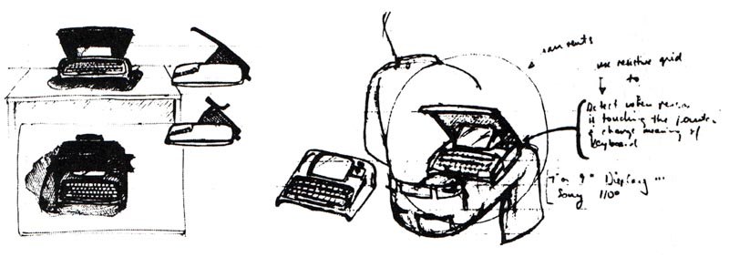Тим часом Ден продовжував свою повну реконструкцію Smalltalk і в дещо схожих напрямках [In 78]. Перше важливе, що потрібно було зробити, це позбутися дуалізму функція/клас на користь повністю інтенсіонального визначення з кожним фрагментом коду як внутрішнім методом. Ми хотіли цього з самого початку (і більша частина коду вже була написана таким чином). Ми з Адель, Ларрі Теслер, який працював над настільними видавничими системами, і студенти-аспіранти висловлювали різні сильні бажання щодо справжнього механізму успадкування. Дену довелося знайти кращий спосіб, ніж дуже жорстка концепція часу компіляції Simula. Настав час обґрунтувати ідею, що «все було об’єктом», який включав усі внутрішні «системні» об’єкти, такі як «записи активації» тощо. Ми всі погодилися, що гнучкий синтаксис попередніх Smalltalks був надто гнучкий, і такий рівень розширюваності не був бажаним. Усі розширення, які нам подобалися, використовували різні схеми ключових слів, тому Ден придумав синтаксис комбінації ключове слово/оператор, який був дуже гнучким, але дозволяв однозначно читати мову як людям, так і машині. Це дозволило визначити машинний компілятор байт-коду та ефективний інтерпретатор FLEX, який працював у 180 разів швидше, ніж попередній прямий інтерпретатор. Систему OOZE VM можна було модифікувати для роботи з новими об’єктами, і її ємність була добре узгоджена з оперативною пам’яттю та диском ALTO.
Кілька слів про успадкування. У Simula-I не було ані класів як об’єктів, ані успадкування. Simula-67 додав останній як узагальнення до <блоку> ALGOL-60; структура. Це була чудова ідея. Але він мав певні недоліки: незначні, як-от зіткнення імен у багатопотокових списках (більше ніхто не використовує багатопотокові списки), і основні, як-от жорсткість у структурах розширеного типу, необхідність кваліфікувати типи, лише один шлях успадкування та труднощі в адаптації до інтерактивної системи розробки з поступовою компіляцією та іншими потребами для миттєвих змін. Крім того, було багато проблем, які виходили за рамки цілей Simula: вони були пов’язані з різними видами моделювання та логічного висновку, які цікавили світ штучного інтелекту. Наприклад, не на всі корисні запитання можна відповісти, дотримуючись статичного ланцюжка. Деякі з них вимагали свого роду «успадкування» або «виведення» через динамічно пов’язані «частини» (тобто змінні екземплярів). Множинне успадкування також виглядало важливим, але відповідні можливі зіткнення між методами з однаковою назвою в різних суперкласах виглядали складними для обробки, і так далі.
З іншого боку, оскільки з динамічною мовою можна зробити те, що складно зі статично скомпільованою, я просто вирішив не використовувати успадкування як функцію в Smalltalk-72, знаючи, що ми можемо симулювати це назад, використовуючи гнучкість Smalltalk, подібну до LISP. Найбільший внесок у ці ідеї штучного інтелекту зробив Ларрі Теслер, який широко використовував те, що зараз називається «успадкуванням слотів», у своїх різноманітних версіях ранніх настільних видавничих систем. Сьогодні це можна назвати схемою успадкування «у стилі делегування» [Liberman 84]. Денні Боброу та Террі Віноград у цей період розробляли «фреймову» мову штучного інтелекту під назвою KRL, яка була «об’єктно-орієнтованою», і я вважаю, що на неї вплинув ранній Smalltalk. Він мав різновид множинного успадкування – під назвою перспективи – яке дозволяло об’єкту виконувати кілька ролей у дуже чистий спосіб. Багато з цих ідей через кілька років увійшли до PIE, цікавого розширення Smalltalk для мереж і описів вищого рівня Іри Голдштейна та Боброу [Goldstein & Bobrow 1980].
На той час, коли з’явився Smalltalk-76, Ден Інгаллс придумав схему, яка була схожа на Simula за своєю семантикою, але могла бути поступово змінена на льоту, щоб відповідати нашим цілям тісної взаємодії. Я не був у повному захваті від цього, тому що здавалося, що нам потрібна краща теорія про спадковість повністю (і досі потрібна). Наприклад, успадкування та встановлення екземплярів (що є різновидом успадкування) плутає як прагматику (наприклад, факторизацію коду для економії місця), так і семантику (використовується для надто багатьох завдань, таких як: спеціалізація, узагальнення, специфікація тощо). Алан Борнінг працював схема множинного успадкування в Thinglab [Borning 1977], яка була реалізована в Smalltalk-76. Але не виявилося всеосяжної та чіткої схеми множинного успадкування, яка була б достатньо переконливою, щоб подолати оригінальний дизайн Дена, подібний до Simula.
Тим часом боротьба з Xerox тривала. Зараз існувало близько 500 ALTO, пов’язаних мережами Ethernet один з одним і з лазерним принтером і файловими серверами, які використовували ALTO як контролери. Я написав багато пам’яток планувальникам Xerox, намагаючись змусити їх скласти плани, які включали персональні комп’ютери як один із їхніх головних напрямків. Ось приклад:
Коротке оновлення моєї статті Пендері 1971 року
У 1990-х роках будуть мільйони персональних комп'ютерів. Вони будуть розміром із сучасні ноутбуки, матимуть відбиваючі дисплеї з плоским екраном високої роздільної здатності, важать менше десяти фунтів, матимуть у десять-двадцять разів більшу обчислювальну потужність і об’єм пам’яті, ніж Alto. Назвемо їх. Dynabooks.
Закупівельна ціна буде приблизно ціною кольорового телевізора тієї епохи, хоча більшість машин буде віддано виробниками, які продаватимуть контент, а не контейнер персональних комп’ютерів.
...
Незважаючи на те, що Dynabook матиме значний обсяг локальної пам’яті та виконуватиме більшість обчислень локально, він витрачатиме великий відсоток свого часу на різні великі глобальні інформаційні програми, які дозволять обмінюватися ідеями, даними, робочі моделі, а також щоденні бесіди, необхідні організаціям для функціонування. Комунікаційний канал буде здійснюватися за допомогою приватного та загального дроту, а також за допомогою пакетної радіозв’язку. Dynabooks також використовуватимуться як сервери в інформаційних службах. Вони матимуть достатньо потужності, щоб повністю формуватися програмним забезпеченням.
...
Іншими словами, матеріалом комп’ютерної системи є сам комп’ютер, весь вміст і функції створений у програмному забезпеченні.
Звідси можна взяти два важливі вказівки:
Xerox повинен серйозно поставитися до цих кількох моментів, якщо хоче вижити та процвітати у своїй новій сфері бізнесу – інформаційних медіа. Якщо це так, компанія має чудові шанси з кількох причин:
У 1976 році Чак Такер розробив ALTO III, який мав використовувати нові чіпи 16k і міг розміститися на робочому столі. Його можна було б продавати приблизно за стільки, скільки коштують великі громіздкі «текстові процесори» спеціального призначення, але міг би робити набагато більше. Тим не менш, у серпні 1976 року Xerox прийняв доленосне рішення: не випускати ALTO III на ринок. Це стало величезним ударом для багатьох із нас – навіть для мене, який ніколи не вважав ALTO чимось іншим, окрім як сходинкою до «справжнього». У 1992 році світовий ринок персональних комп’ютерів і робочих станцій становив 90 мільйонів доларів США — це вдвічі більше, ніж ринок мейнфреймів і міні-комп’ютерів, і у багато разів валовий прибуток Xerox у 1992 році. Найуспішніша компанія цієї епохи – Microsoft – це не апаратне, а програмне забезпечення.
Кілька рецензентів попросили мене розповісти більше про розробку віконного інтерфейсу користувача, що перекривається, у стилі «Smalltalk», оскільки зараз у світі понад 20 мільйонів комп’ютерів використовують його нащадки. Пристойна історія була б такою ж довгою, як цей розділ, і досі жодного не було написано. Існує стислий виклад деяких ідей у [Kay 89]—дозвольте мені додати ще кілька моментів.
Усі елементи, які врешті-решт використовувалися в інтерфейсі користувача Smalltalk, можна було знайти ще в шістдесятих роках – як різні способи доступу та виклику функціональних можливостей, наданих інтерактивною системою. Двома головними центрами ідей були Lincoln Labs і RAND corp – обидві фінансувалися ARPA. Великий зсув, який об’єднав ці ідеї в потужну теорію та довготривалі приклади, стався тому, що LRG зосередилася на дітях. Отже, ми думали про навчання як про один із головних ефектів, яких ми хотіли отримати. На початку це призвело до повороту призначення інтерфейсу користувача на 90 градусів від «доступу до функцій» до «середовища, в якому користувачі навчаються на практиці». Тепер ця нова позиція могла відповісти на відлуння Монтессорі та Дьюї, особливо першої, і змусила мене, перечитуючи Джерома Брунера, думати не тільки про дитячу програму, але й про «програму інтерфейсу користувача».
Особлива мета LRG полягала в тому, щоб знайти еквівалент письма, тобто навчання та мислення в середовищі, наш новий «кишеньковий всесвіт». З різних причин я зупинився на «іконічному програмуванні» як способі досягнення цього, спираючись на культові представлення, які використовувалися в багатьох проектах ARPA у шістдесятих. Мій друг Ніколас Негропонте, архітектор, був надзвичайно зацікавлений у тому, як середовище впливає на роботу та творчість людей. Йому було цікаво впровадити нову комп’ютерну магію у знайоме середовище. У минулому житті я мав досить великий театральний досвід і пам’ятаю прислів’я Колріджа про те, що «люди відвідують «поганий театр», сподіваючись забути, люди відвідують «хороший театр» з бажанням згадувати». Іншими словами, саме здатність викликати у глядачів власний інтелект і досвід змушує театр працювати.
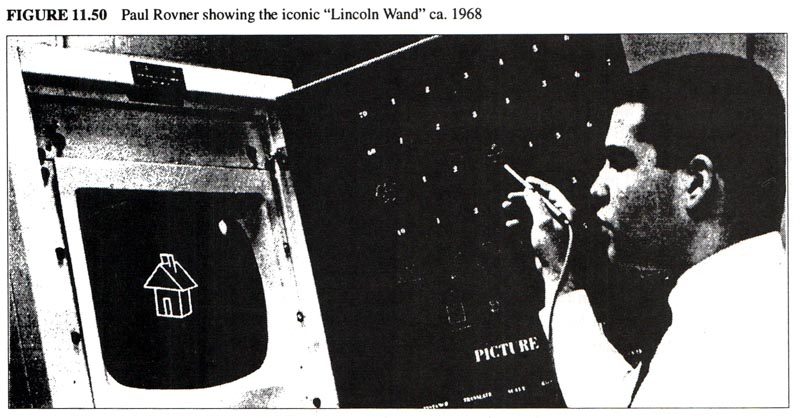 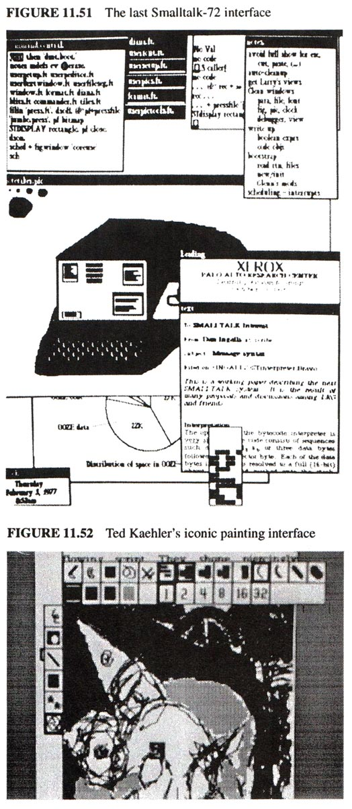Зібравши все це разом, ми хочемо мати начебто вільне середовище, в якому дослідження викликають бажані послідовності (Монтессорі); той, який дозволяє кінестетичне, іконічне та символічне навчання—"працюючи з зображеннями створюють символи" (Піаже та Брунер); користувач ніколи не потрапляє в режим (GRAIL); магія закладена в знайомому (Негропонт); і яка діє як збільшувальне дзеркало для власного інтелекту користувача (Колрідж). Було б чудовим завершенням цієї історії сказати, що, сформулювавши це, ми змогли відразу перейти до дизайну, яким ми його знаємо сьогодні. Насправді робота над дизайном інтерфейсу користувача відбувалася уривчасто між підживленням самого Smalltalk, проектуванням дитячих експериментів, спробами зрозуміти культову конструкцію та просто іграми. Незважаючи на цю звивистість, контекст майже змусив вийти гарний дизайн. Майже всі в PARC у той час мали думки про інтерфейс користувача, наш і їхній. Неможливо віддати належне сотням ідей і дискусій. Проте консолідацію, безперечно, можна віднести на рахунок Дена Інгалла, який прислухався до кожного, вносив оригінальні ідеї та постійно створював дизайн для тестування користувачами. Я мав достатню участь у встановленні контексту, винаході вікон, що перекриваються, тощо, і ми з Адель розробили більшість експериментів. Крім того, Тед Келер і відвідувач Рон Бекер зробили дуже цінний внесок. Дейв Сміт розробив SmallStar, прототип культового інтерфейсу для продукту Xerox Star [Сміт 83].
Тим часом я зацікавив Дага Фейрберна Notetaker. Він розробив чудову «розумну шину», яка могла ефективно працювати з повільними кількома процесорами, і система виглядала дуже багатообіцяючою, хоча більшість решти PARC вважали, що я збожеволів відмовитися від швидкого біполярного hw ALTO. Але я не бачив, що біполярний пристрій коли-небудь стане доступним для ноутбука чи Dynabook. З іншого боку, я ненавидів 8-розрядні мікросхеми, які тільки почали з’являтися, через безглуздість і наївність їхнього дизайну – не було жодного натяку на те, що будь-хто, хто коли-небудь розробляв програмне забезпечення, був залучений.
Ден закінчив дизайн Smalltalk-76 у листопаді, і він, Дейв Робсон, Тед Келер і Діана Меррі успішно впровадили систему з нуля (що включало переписування всіх існуючих визначень класів) лише за сім місяців. це було таке чудове досягнення, що я був вражений, незважаючи на моє бажання почати все спочатку. Він був швидким, жвавим, міг вирішувати «великі» проблеми та був дуже веселим. Система складалася з приблизно 50 класів, описаних приблизно на 180 сторінках вихідного коду. Це включало всі функції ОС, файли, друк та інші служби Ethernet, віконний інтерфейс, редактори, системи графіки та малювання, а також два нових внески Ларрі Теслера, відомі браузери для статичних методів в ієрархії успадкування та динамічних контекстів для налагодження. у середовищі виконання. У всіх відношеннях це була консолідація всіх наших ідей і прагнень щодо Smalltalk в одному інтегрованому пакеті. Відтоді всі Smalltalks дуже нагадували цю концепцію. У багатьох відношеннях, як одного разу Тоні Хоар зауважив про Algol, Smalltalk-76 Дена був великим покращенням своїх наступників!
Ось два стильних класи ST-76, написані Деном.
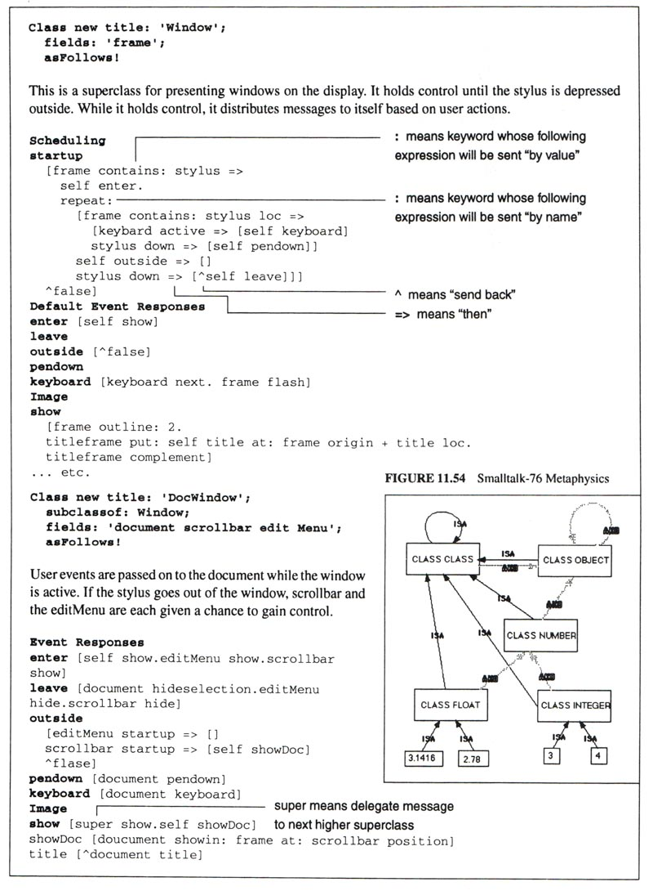Зверніть увагу, особливо в класі Window, як код виражається як цілі, які інші об’єкти (або він сам) повинні досягти. Основне завдання суперкласу Window — помічати події та розповсюджувати їх як повідомлення своїм підкласам. У цьому прикладі вікно документа (підклас DocWindow) має працювати з наслідками взаємодії користувача. Клас Window помітить, що клавіатура активна, і надішле собі повідомлення, яке буде перехоплено методом підкласу. Якщо методу немає, персонаж буде викинуто, а вікно почне блимати. У цьому випадку він знаходить метод DocWindow: клавіатуру, яка повідомляє документу, який утримується, перевірити його.
У січні 1978 року Smalltalk-76 пройшов перше реальне випробування. CSL запросила десять топ-менеджерів Xerox до PARC на дводенний семінар з програмного забезпечення, з особливим наголосом на складності та тому, що можна з цим зробити. LRG попросили надати їм практичний досвід програмування для кінцевих користувачів, щоб «вони могли зробити «щось справжнє» протягом двох 1½ сеансів». Ми одразу вирішили не навчати їх Smalltalk-76 (мій пункт «записати наші дискові пакети»), а створити протягом двох місяців у Smalltalk-76 багатофункціональну систему, спеціально розроблену для дорослих користувачів без досвіду ( Очко Дена в козирних позиціях). Ми взяли нашу модель симуляції робочого цеху "Simpula" як відправну точку та вирішили побудувати інтерфейс користувача для узагальненого інструменту моделювання робочого цеху, який керівники могли б перетворити на конкретні динамічні симуляції, які б відтворювали їхні мінливі стани за допомогою анімації графіки на екрані. . Ми назвали це Smalltalk SimKit. Це було максимум зусиль, і всі долучилися. Адель стала лідером дизайну, незважаючи на те, що зовсім недавно з’явилася нова дитина. У мене є безцінна пам’ять про те, як вона налагоджувала SimKit і одночасно годувала Рейчел.
Було багато цікавих завдань, які потрібно було вирішити. Сама система була простою, але її потрібно було повністю відгородити від Smalltalk, особливо щодо повідомлень про помилки. Дейв Робсон придумав гарну схему (майже експертну систему), щоб фіксувати скарги з надр Smalltalk і перекладати їх на змістовні терміни SimKit. Було багато деталей інтерфейсу користувача – деякі повсякденні, як-от створення нових браузерів, які могли переглядати лише чотири класи SimKit (Station, Worker, Job, Report), і деякі більш дивовижні, коли ми випробували це на десяти нетехнічних дорослих PARC близько того самого віку та виявили, що вони погано читають екран. Дрібні шрифти, до яких звикли очі наших тридцятирічних, не працювали для тих, кому за 50. Це призвело до гарного знайомства з системою, у якому керівників заохочували налаштовувати екран, вибираючи серед різних шрифтів і розмірів, з побічним ефектом, що вони навчилися несвідомо користуватися мишею.
Вранці «великого дня» Тед Келер вирішив внести зміни в систему віртуальної пам'яті OOZE, щоб трохи прискорити її роботу. Ми всі затамували подих, але такою була ясність дизайну та впевненість розробників, що він справді спрацював, а практичне керівництво мало шалений успіх. Приблизно через годину після першої сесії один із віце-президентів (який написав кілька програм на FORTRAN 15 років тому) нарешті зрозумів, що він програмує, і подумав: «Отже, нарешті дійшло до цього». Дев'ять із десяти керівників змогли завершити задачу моделювання, яка стосувалася їхніх конкретних інтересів. Однією з найцікавіших і найскладніших була лінія виробництва друкованих плат, створена керівником компанії, що належить Xerox, з використанням фактичних цифр (які він носив у своїй голові) для створення моделі, яку не можна було легко розв’язати за допомогою математики закритої форми—it виявив серйозний недолік у розпорядженні працівників, враховуючи середню ймовірність виробничих дефектів лінії.
Іншою важливою системою, створеною в той час, була Thinglab Алана Борнінга [Borning 1979] — перша серйозна спроба вийти за межі Sketchpad Івана Сазерленда. Алан розробив дуже гарний підхід для роботи з обмеженнями, які не вимагали від розв’язувача бути всезнаючим (або здатним розв’язати останню теорему Ферма).
Ми бачили, що «наштовхуючий» стиль Smalltalk зрештою може бути замінений на «тягнучий» стиль, який керувався змінами цінностей, на яких базувалися різні методи. Це була стара ідея, але Thinglab показав, як можна використовувати об’єктно-орієнтоване визначення для автоматичного обмеження контекстів для обробки, керованої подіями. І незабаром ми виявили, що «прототипи» є більш гостинними, ніж класи, і що множинне успадкування було б добре обслуговувано, якби існували класи для методів, які загалом знали, про що вони мають бути (натхненні моделями 2-го порядку Пета Вінстона).
Тим часом NoteTaker ставав реальнішим, більшим і повільнішим. На той час мікросхеми Western Digital у стилі емуляції, які я сподівався використати, показали ознаки «дифузійного обладнання» і не схоже, що вони справді з’являться. Ми почали шукати щось, на що можна було б розраховувати, навіть якщо це не мало хорошої архітектури. У 1978 році найкращим кандидатом був Intel 8086, 16-розрядний чіп (з багатьма невдалими залишками 8008 і 8080), але з (ледве) достатньою потужністю для виконання роботи – нам знадобиться три з них, щоб компенсувати ALTO, один для інтерпретатора, один для растрової графіки та один для вводу/виводу (мережа тощо).
Ден весь час цікавився NoteTaker і хотів побачити, чи зможе він створити версію Smalltalk-76, яка могла б стати системою NoteTaker. Для того, щоб це сталося, він мав би працювати з 256K, максимальним обсягом оперативної пам’яті, який ми запланували для машини. Жоден емульований «машинний код», схожий на NOVA, з ALTO не міг бути перенесений, і він також мав поміститися в пам’ять – були б лише дискети, пам’яті для обміну не існувало. Ця проблема призвела до деяких чудових покращень у дизайні системи. Для клонування Smalltalk-76 у NoteTaker використовувався системний трасувальник Теда Келера (який міг записувати нові віртуальні спогади зі старих). Таблиця індексованих об’єктів (як використовувалася в ранньому Smalltalk-80) вперше з'явився тут для спрощення доступу до об'єктів. Був спробований експеримент із суміжним укладанням контекстів: щоб заощадити простір і збільшити швидкість. Більшість старого машинного коду було переписано в Smalltalk, а загальне машинне ядро було зменшено до 6 Кбайт (не дуже сильного) коду 8086.
Вся реінжиніринг мала цікавий ефект. Хоча 8086 не був таким хорошим у bitblt, як ALTO (і більша частина попереднього машинного коду для підтримки графіки тепер була в Smalltalk), загальний інтерпретатор був приблизно вдвічі швидшим за версію ALTO (оскільки не весь байт-код Smalltalk інтерпретатор поміститься в пам’ять мікрокодів 4k на ALTO). За допомогою різноманітних трюків і налаштувань графічний дисплей був «значною мірою компенсований» (за словами Дена). Це сталося головним чином через те, що ALTO не мав достатньої пам’яті мікрокоду, щоб прийняти весь код емуляції Smalltalk – деякі з них потрібно було відобразити в емульованому коді «NOVA», що вимагало двох рівнів інтерпретації. Насправді, Notetaker працював надзвичайно добре, хоча він розтрощив би будь-яке коло. Він повернувся на стіл і був підозріло схожий на miniCOM (і кілька комп’ютерів, які з’являться через кілька років). Він справді працював від батарейок, і деякі з нас мали задоволення взяти NoteTaker у літак і запустити об’єктно-орієнтовану систему з віконним інтерфейсом на висоті 35 000 футів.
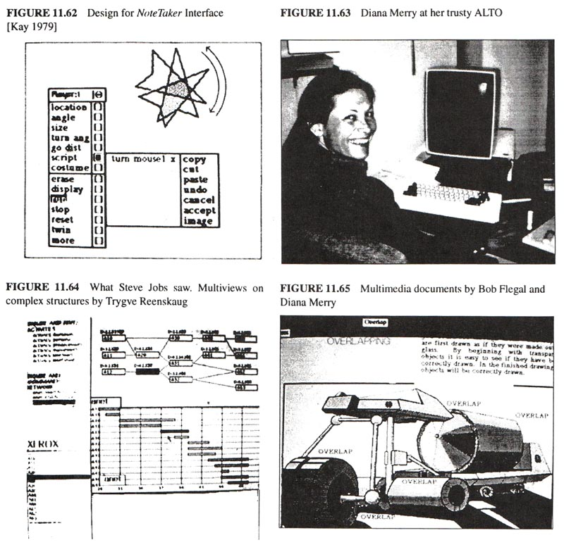Зрештою ми створили близько 10 машин, і, хоча багато в чому це було інженерним успіхом, те, що потрібно було зробити для їх створення, знову витіснило справжніх кінцевих користувачів, для яких вони спочатку були призначені. Якби Xerox (і PARC) загалом повірили в ці менш масштабні ідеї, ми могли б докласти набагато більше силиконових м’язів до мрій і успішно створити їх у 70-х роках, коли вони були вперше можливими. Було гірким розчаруванням отримати неправильний тип процесора від Intel і неправильний тип дисплея від HP, оскільки не вистачило корпоративної волі, щоб скористатися внутрішнім технологічним досвідом.
На той час був уже 1979 рік, і ми виявили, що робимо одну з наших багатьох демонстрацій, але цього разу для дуже зацікавленої аудиторії: Стіва Джобса, Джефа Раскіна та інших технічних людей з Apple. Вони розпочали проект під назвою Lisa, але не були зовсім впевнені, яким він має бути, доки Джеф не сказав Стіву: «Тобі справді варто прийти до PARC і подивитися, що вони роблять». Таким чином, через понад вісім років після того, як були винайдені вікна, що перекриваються, і понад шість років після того, як ALTO почав працювати, люди, які дійсно могли щось зробити з ідеями, нарешті змогли їх побачити. Використовувалася машина Dorado, дуже швидкий «старший брат» ALTO, чий мікрокод Smalltalk був в основному написаний Брюсом Горном, одним із наших початкових «дітей Smalltalk», який був ще підлітком. Ларрі Теслер показав основну частину демонстрації, Ден сидів у кріслі другого пілота, а ми з Адель спостерігали ззаду. Однією з найкращих частин демонстрації було те, що Стів Джобс сказав, що йому не подобається прокручування у стилі blt, яке ми використовуємо, і запитав, чи можна зробити це у плавному безперервному стилі. Менш ніж за хвилину Ден знайшов задіяні методи, вніс (відносно значні) зміни, і тепер прокручування стало постійним! Це шокувало відвідувачів, особливо програмістів серед них, оскільки вони ніколи раніше не бачили дійсно потужної інкрементної системи.
Стів намагався придбати та/або придбати технологію в Xerox (який був одним із міноритарних венчурних капіталістів Apple), але Xerox не розлучився з нею та не знайшов ресурсів, щоб продовжити її власний розвиток, фінансуючи кращу NoteTaker разом із Smalltalk.
"Найбільший гріх у мистецтві — не нудьга,
як прийнято вважати, а відсутність
пропорції" — Пауль Хіндеміт
Як сказав Ден, «рішення не продовжувати проект NoteTaker додало мотивації для широкого випуску Smalltalk». Але не для мене. На той час я був задоволений чистотою та елегантністю концепції Smalltalk, яку реалізували Ден та інші, і засмучений тим, що він був як ніколи далеко від дітей – мене вразило те, що жодна дитина не запрограмувала будь-який Smalltalk з моменту дебюту Smalltalk-76. Xerox (і PARC) тепер цікавилися «робочими станціями» як речами по собі, але я все ще хотів «playstation». Романтика Dynabook здавалася менш доступною, як це не парадоксально, саме тоді, коли різні необхідні технології почали бути комерційно придатними – деякі з них, на жаль, як-от дисплей з плоским екраном, покинули японцям американські компанії, які їх винайшли. Це був головний випадок «виривання поразки з пащі перемоги». Ларрі Теслер вирішив, що Xerox ніколи не «зрозуміє», і в травні 1980 року його найняв Стів Джобс стати головним дизайнером Lisa. Я погодився, прийшов у відпустку і взяв його.
Адель вирішила керувати процесом документації та випуску нового Smalltalk, який можна було б поширювати майже незалежно від цільового обладнання. Довелося внести лише кілька змін у NoteTaker Smalltalk-78, щоб зробити систему доступною для випуску. Можливо, найіронічнішою зміною було повернення користувацьких шрифтів, які зробили Smalltalk більш читабельним (і були ознакою всієї культури PARC), на стандартні пішохідні символи ASCII. За словами Пітера Дойча, це «на той час зустріло гарячу опозицію всередині групи, але виявилося важливим для прийняття системи у світі». Інша зміна полягала в тому, щоб зробити блоки більш схожими на лямбда-вирази, що, як зауважив Пітер Дойч дев’ять років потому: «Оглядаючись назад, це поширення різних видів екземплярів і масштабування було, ймовірно, поганою ідеєю». Найбільш загадковою дивною ідеєю – принаймні для мене як новачка – було введення метакласів (насправді лише для полегшення ініціалізації екземпляра – дуже незначне покращення порівняно з тим, що вже мав Smalltalk-76). Коментар Пітера 1989 року є типовим і правдивим: «метакласи виявилися заплутаними для багатьох користувачів і, можливо, в цілому більше заплутали, ніж принесли цінність». Насправді, у своїй системі PIE Голдштейн і Боброу вже впровадили в Smalltalk «мову спостерігача», дещо наслідуючи підхід, орієнтований на перегляд, який я відстоював, і певною мірою схожий на «перспективи», запропоновані в KRL [Goldstein *]. Якщо екземпляр можна переглянути з кількох точок зору, навіть «напівметакласи», як-от Class Class і Class Object, насправді не потрібні, оскільки роль об’єкта та роль екземпляра-класу — це просто різні погляди, і з ними легко працювати. з проблемами історії життя, включаючи інстанціювання. Це було для ознайомлення (разом із кількома іншими хорошими ідеями), але не було прийнято. Я припускаю, що Smalltalk перейшов у фінальну фазу, про яку я згадував на початку цієї історії, коли спосіб дій остаточно канонізується в негнучку структуру переконань.
Останній коментар. Апаратне забезпечення - це просто програмне забезпечення, яке викристалізувалося рано. Він існує для того, щоб схеми програм працювали якомога ефективніше. Але надто часто апаратне забезпечення представляється як даність, і розробники програмного забезпечення повинні зробити його розумним. Це призвело до того, що низькорівневі методи та надмірна оптимізація стримують прогрес у розробці програм. Як казав Боб Бартон: «Системні програмісти — верховні жерці низького культу».
Один із способів думати про прогрес у програмному забезпеченні полягає в тому, що багато з них стосувалося пошуку способів пізнього прив’язування, а потім проведення кампаній, щоб переконати виробників вбудовувати ідеї в апаратне забезпечення. Ранні апаратні засоби мали дротові програми та параметри; оперативна пам'ять була схемою для їх пізнього зв'язування. Раніше цикл та індексування здійснювалися шляхом зміни адреси в сховищі; індексні регістри були способом пізнього зв'язування. Протягом багатьох років розробники програмного забезпечення знайшли способи пізніх зв’язків між розташуваннями обчислень – це призвело до регістрів бази/меж, переміщення сегментів, сторінок MMU, процесів міграції тощо. Розподіл часу роками стримувався, оскільки він був «неефективним»— але виробники не хотіли встановлювати MMU на машини, університети повинні були зробити це самі! Рекурсія пізно прив’язує параметри до процедур, але знадобилися роки, щоб упровадити навіть елементарні механізми стеку в ЦП. Більшість машин досі не мають підтримки динамічного розподілу, збирання сміття тощо. Коротше кажучи, більшість дизайнів апаратного забезпечення сьогодні є лише повторною оптимізацією відмираючих архітектур.
З точки зору пізнього зв’язування ООП можна розглядати як комплексну техніку для пізнього зв’язування якомога більшої кількості речей: поєднання стану та процесу в наборі поведінки, де вони розташовані, як вони називаються, коли і чому їх викликають, яке HW використовується , і т.д., і більш тонкі, стратегії, які використовуються в самій схемі ООП. Мистецтво обгортання - це мистецтво пастки.
Розглянемо два випадки, які необхідно ефективно обробляти, щоб повністю обернути об’єкти. Було б жахливо, якби a + b викликало будь-які накладні витрати, якби a та b були прив'язані, скажімо, до " 3" і "4" у формі, яка може бути оброблена ALU. Операції мають відбуватися на повній швидкості з використанням логіки огляду (у найпростішій схемі один вентиль і), щоб перехопити, якщо операнди несумісні з ALU. Тепер усі елементарні операції, які мають відбуватися швидко, загорнуті без уповільнення роботи машини.
Другий випадок трапляється, якщо пастка визначила, що об’єкти, про які йдеться, надто складні для ALU. Тепер HW має динамічно знаходити метод, який може обробляти об’єкти. Це дуже схоже на індексування – клас одного з об’єктів «індексується» потрібним методом-селектором у дещо більш загальний спосіб. Іншими словами, віртуальною адресою методу є <клас>&селектор>. Оскільки більшість апаратних засобів сьогодні виконує певний вид трансляції віртуальної адреси, щоб знайти справжню адресу —перехоплення—це цілком можливо приховати накладні витрати на надсилання OOP у накладних витратах MMU, які вже були раціоналізовані.
Знову ж таки, суть ООП полягає в не необхідності турбуватися про те, що всередині об'єкта. Об’єкти, створені на різних машинах і з різними мовами, повинні мати можливість спілкуватися один з одним—і повинні будуть у майбутньому. Пізнє прив’язування тут передбачає захоплення несумісності в reметоди сумісності—хороше обговорення деяких проблем можна знайти в [Popek 1984].
Залишаючись на метафорі пізнього зв’язування, які подальші схеми пізнього зв’язування ми можемо очікувати побачити? Однією з найкращих схем пізнього зв’язування, з якою експериментують, є протокол метаоб’єктів працювати в Xerox PARC [Kiczales 1991]. Ідея полягає в тому, що вибір розробника мови для внутрішнього представлення екземплярів, змінних тощо може не відповідати потребам реалізатора, тому в рамках фіксованої семантики вони дозволяють реалізатору надавати системі стратегії— наприклад, використання хешованого пошуку для слотів в екземплярі замість прямого індексування. Потім вони ефективно компілюються та розширюють базову реалізацію системи. Це прямий нащадок подібних напрямків з минулого Simula, FLEX, CDL, Smalltalk і Actors.
Ще одна схема пізнього зв’язування, яка вже є необхідною, — це уникнути прямого зіставлення протоколів, коли новий об’єкт з’являється в системі об’єктів. Іншими словами, якщо хтось надішле вам об’єкт з півсвіту, буде незвичайним, якщо він відповідатиме вашим локальним протоколам. У якийсь момент буде легше мати ще більше інформації про себе – достатньо, щоб його специфікації можна було «зрозуміти», а його конфігурацію у вашій суміші зробити за допомогою більш тонкого зіставлення виводу.
Вийти за рамки ООП, як ми знаємо його сьогодні, також можна зробити, подумавши про пізнє зв’язування. Чудова ідея Prolog полягає в тому, що для виконання обчислень йому не потрібні прив’язки до значень [Col **]. Змінна є об’єктом, і мережа часткових результатів може бути створена для заповнення, коли нарешті буде знайдено прив’язку. Eurisko [Lenat **] створює свої методи —і модифікує свої основні стратегії—намагаючись вирішити проблему. Замість того, щоб проблема шукала методи, методи шукають проблеми, а Eurisko шукає методи методів. Це було названо «опортуністичним програмуванням» – я вважаю це прагненням до більшого просвітництва, у якому проблеми вирішуються як частина процесу.
Ця висока обчислювальна тонкість знадобиться, оскільки наступна зміна парадигми – поширена мережа – відбудеться протягом наступних п’яти років. Об'єкти поступово стануть активними агентами і мандруватимуть мережами в пошуках корисної інформації та інструментів для своїх менеджерів. Об’єкти, повернуті в обчислювальне середовище з половини світу, не зможуть налаштувати себе шляхом прямого зіставлення протоколів, як це роблять об’єкти сьогодні. Натомість об’єкти будуть нести набагато більше інформації про себе у формі, яка дозволяє вивідне стикування. Частина поточної роботи над специфікацією може бути спрямована на це завдання [Guttag **][Goguen **].
Я щиро кажучи, колись я охарактеризував прогрес у мовах програмування як своєрідну теорію «сонячної плями», у якій значні успіхи відбувалися приблизно кожні 11 років. Ми почали з машинного коду в 1950 році, потім у 1956 році FORTRAN з’явився як «краща стара річ», яка, якщо розглядати її як «майже нова річ», стала попередником ALGOL-60 у 1961 році. У 1966 році SIMULA була «кращою». стара річ», яка, якщо розглядати її як «майже нова річ», стала попередником Smalltalk у 1972 році.
Здавалося, що все створено для того, щоб ще раз підтвердити «теорію»: у 1978 році Eurisko був на місці як «краща стара річ», яка була «майже новою річчю». Але 1983 рік і ціле десятиліття прийшли і пройшли без «нового». Звичайно, така теорія все одно безглузда, але я вважаю, що величезна комерціалізація персональних комп’ютерів заглушила велику частину роботи, яка раніше виконувалася в університетах і дослідницьких лабораторіях, залучаючи талановитих дітей до практичного застосування. Оскільки компанії настільки схильні до ризику, що стосуються створення власного HW, а компанії HW не видають справжнього розуміння програмного забезпечення, результат став великим кроком назад у більшості аспектів.
Проблема двадцятого століття полягає в тому, що технології стали занадто «легкими». Коли було важко зробити будь-що, добре чи погано, витрачалося достатньо часу, щоб результат зазвичай був хорошим. Тепер ми можемо створювати речі майже тривіально, особливо в програмному забезпеченні, але більшість проектів також тривіальні. Це зворотній вандалізм: створювати речі, тому що ти можеш. Поєднайте це з ще менш досвідченими покупцями, і ви створите ринок експлуатації, схожий на той, який створено для підлітків. Протидією цьому є породження величезного невдоволення своїми дизайнами, використовуючи всю історію людського мистецтва як стандарт і мету. Тоді хитрість полягає в тому, щоб відокремити невдоволення від почуття власної гідності – інакше це або надто пригнічує, або людина припиняється надто рано з тривіальними результатами.
Я залишу історію раннього Smalltalk у 1981 році, коли в журналі Byte було опубліковано велику серію статей про Smalltalk-80 [Byte 1981], а потім книги Адель і Дейва Робсона [Goldberg 1983] і офіційний випуск системи в 1983 році. Тепер програмісти могли легко впроваджувати віртуальну машину без потреби її винаходити заново, а в кількох випадках групи мали змогу створювати власні образи базових класів. Незважаючи на те, що Smalltalk доводиться працювати майже скрізь на відмираючих архітектурах HW, Smalltalk надзвичайно добре поширився (частково через величезні зусилля з оптимізації на цих машинах) [Deutsch 83]. Наскільки я можу судити, це все ще здається найбільш широко використовуваною системою, яка претендує на об’єктно-орієнтовану систему. Для мене неймовірно, що з тих пір ніхто не придумав якісно кращу ідею, яка була б такою ж простою, елегантною, легкою для програмування, практичною та всебічною. (Шкода, що тоді ми не знали про PROLOG або навпаки, комбінації двох мов, створені згодом, досить інтригуючі.)
Справедливо аплодуючи Дену, Адель та іншим, завдяки яким Smalltalk став можливим, ми повинні водночас запитати: де Дани та Аделі 80-х і 90-х років, які виведуть нас на наступний етап?